Müstəqilliyin elan edildiyi ilk günlərdə
ərazi mübahisəsi
1918-ci ilin
mayında Cənubi Qafqazda müstəqil dövlətlər yaranandan 1920-1921-ci illərdə həmin
dövlətlərdə Sovet hakimiyyəti bərqərar edilənə qədər onların arasında sülh
münasibətlərinin yaradılmasında əsas maneə ərazi məsələsi idi.
Bunun səbəbi yeni yaranmış müstəqil dövlətlərin sərhədlərinin Rusiya imperiyasının keçmiş quberniyalarının sərhədləri ilə uyğun gəlməməsi idi. Tərəflərin ərazi iddiaları maksimalizmi ilə fərqlənirdi, onları təmsil edənləri isə coğrafiya, əhalinin etnik bölgüsü və ya beynəlxalq siyasət kimi obyektiv reallıqlar az narahat edirdi. Yeni müstəqil respublikaların sərhədlərlə bağlı bəzən əfsanəvi məlumatlara (və ya rəvayətlərə) əsaslanaraq (məsələn, "Böyük Ermənistan") öz ərazilərini müəyyən etmək istəyi qonşu dövlət tərəfindən bu və ya digər torpaqlara sahib olmaq iddiaları ilə toqquşurdu.
Bunun səbəbi yeni yaranmış müstəqil dövlətlərin sərhədlərinin Rusiya imperiyasının keçmiş quberniyalarının sərhədləri ilə uyğun gəlməməsi idi. Tərəflərin ərazi iddiaları maksimalizmi ilə fərqlənirdi, onları təmsil edənləri isə coğrafiya, əhalinin etnik bölgüsü və ya beynəlxalq siyasət kimi obyektiv reallıqlar az narahat edirdi. Yeni müstəqil respublikaların sərhədlərlə bağlı bəzən əfsanəvi məlumatlara (və ya rəvayətlərə) əsaslanaraq (məsələn, "Böyük Ermənistan") öz ərazilərini müəyyən etmək istəyi qonşu dövlət tərəfindən bu və ya digər torpaqlara sahib olmaq iddiaları ilə toqquşurdu.
Cənubi Qafqazda
tarixən təşəkkül tapmış "zolaqlı" qarışıq məskunlaşma şəraitində müxtəlif xalqların
ərazi bölgüsü məsələlərini dəfələrlə danışıqlar yolu ilə həll etmək cəhdləri uğursuzluğa
düçar olurdu. Sərhədlərin müəyyən edilməsinin yalnız zorakı yolu qalırdı və düşmənçilik
aparan tərəflər bu yola getdikcə daha çox üstünlük verirdilər.
Əsasən erməni və azərbaycanlı əhalinin qarışıq yaşadığı Yelizavetpol və İrəvan quberniyaları ilə həmsərhəd ərazilər Azərbaycan və Ermənistan arasındakı münaqişənin obyektinə çevrilirdi. Lap başdan və əhəmiyyətli dərəcədə ərazi məsələsinin həlli əsasən xarici geosiyasi və hərbi amillərlə müəyyən edilirdi.
1918-ci ilin may-oktyabr aylarında Azərbaycan və Ermənistan sərhədlərinin müəyyən edilməsində Osmanlı imperiyası həlledici rol oynamışdır. Belə ki, Osmanlı hökumətinin fəal iştirakı ilə 1918-ci il may ayının sonunda Cənubi Qafqazda ilk erməni dövləti yaradılır, onun paytaxtı isə Azərbaycan Xalq Cümhuriyyəti Milli Şurasının 29 may 1918-ci il tarixli qərarı ilə Azərbaycan hökuməti tərəfindən təmin edilir. Türkiyə komandanlığının respublikaların hər biri ilə ayrı-ayrılıqda imzaladığı 4 iyun 1918-ci il tarixli Batum müqaviləsinə əsasən, onların sərhədləri yalnız Osmanlı imperiyasına münasibətdə müəyyən edilmişdi. Bircə respublikalar arasında qarşılıqlı sərhədləri müəyyən etmək və dəqiqləşdirmək qalırdı.
Batum müqaviləsinin 3-cü maddəsinə əsasən, Azərbaycan və Ermənistan arasında qarşılıqlı sərhədlərin tərəflərin imzaladığı və bu müqavilənin bir hissəsini təşkil edən protokollar əsasında təsbit edilməsi nəzərdə tutulurdu. [1] Ancaq Batumda qarşılıqlı sərhədlər haqqında heç bir protokol imzalanmamışdı. Bununla belə, Azərbaycan Xalq Cümhuriyyəti Milli Şurasının 14 iyun 1918-ci il tarixli bəyanatına əsasən, Tiflisdə erməni Milli Şurasının nümayəndələri ilə birgə iclas zamanı ərazilərin bölünməsi ilə bağlı şifahi razılıq əldə edilmişdi [2] . Bu sözləşmənin əsasında Batumda Azərbaycanın İrəvanı Ermənistanın paytaxtı elan olunmasına etiraz etməyəcəyi, Azərbaycan tərəfinin xoş məramına cavab olaraq isə Ermənistanın Yelizavetpol quberniyasının bir hissəsinə, yəni Qarabağın dağlıq hissəsinə iddialarından imtina edəcəyi barədə əldə edilmiş razılıq dururdu.
Ancaq erməni tərəfi bu formatda danışıqlar aparmaqdan imtina etdi. Bu barədə İstanbulda olan erməni nümayəndə heyətinin sədri A.Aqaronyan Ermənistanın xarici işlər naziri A.Ohancanyana ünvanladığı 8 iyul 1918-ci il tarixli teleqramında yazırdı. 1918-ci il iyun ayının sonundan etibarən Dördlər ittifaqı ölkələrinin iştirakı ilə İstanbulda keçiriləcək konfransa Cənubi Qafqaz respublikalarının hökumət nümayəndə heyətləri toplaşmağa başlamışdı.
Aqaronyanın teleqramında bildirilirdi ki, Batum danışıqları üç müstəqil dövlətin deyil, Zaqafqaziya dairələrinin sərhədlərinə aid olduğundan, bu danışıqlar artıq öz mənasını tamamilə itirmişdir. İndi də erməni tərəfi hesab edirdi ki, Ermənistanın sərhədlərinə ən azından Şuşa, Qaryagin (Cəbrayıl), Cavanşir, Zəngəzur, Dərələyəz, Sürməli, Naxçıvan və Şərur daxil olmalıdır [3] . Beləliklə, Ermənistan öz sərhədlərini müsəlman əhalisi sayca ermənilərdən çox olduğu Yelizavetpol və İrəvan quberniyalarının əraziləri hesabına genişləndirməyə çalışırdı. Buna görə də Azərbaycan Nazirlər Şurasının sədri F.X.Xoyski 31 iyul 1918-ci il tarixli depeşində İstanbul konfransında iştirak edən Azərbaycan nümayəndə heyətinin rəhbəri M.Ə.Rəsulzadəyə təklif etmişdi ki, ermənilər Qarabağa iddialarını dilə gətirsələr [4] , İrəvanı və Qazax qəzasının bir hissəsinin onlara güzəşt edilməsindən imtina edilsin.
Əsasən erməni və azərbaycanlı əhalinin qarışıq yaşadığı Yelizavetpol və İrəvan quberniyaları ilə həmsərhəd ərazilər Azərbaycan və Ermənistan arasındakı münaqişənin obyektinə çevrilirdi. Lap başdan və əhəmiyyətli dərəcədə ərazi məsələsinin həlli əsasən xarici geosiyasi və hərbi amillərlə müəyyən edilirdi.
1918-ci ilin may-oktyabr aylarında Azərbaycan və Ermənistan sərhədlərinin müəyyən edilməsində Osmanlı imperiyası həlledici rol oynamışdır. Belə ki, Osmanlı hökumətinin fəal iştirakı ilə 1918-ci il may ayının sonunda Cənubi Qafqazda ilk erməni dövləti yaradılır, onun paytaxtı isə Azərbaycan Xalq Cümhuriyyəti Milli Şurasının 29 may 1918-ci il tarixli qərarı ilə Azərbaycan hökuməti tərəfindən təmin edilir. Türkiyə komandanlığının respublikaların hər biri ilə ayrı-ayrılıqda imzaladığı 4 iyun 1918-ci il tarixli Batum müqaviləsinə əsasən, onların sərhədləri yalnız Osmanlı imperiyasına münasibətdə müəyyən edilmişdi. Bircə respublikalar arasında qarşılıqlı sərhədləri müəyyən etmək və dəqiqləşdirmək qalırdı.
Batum müqaviləsinin 3-cü maddəsinə əsasən, Azərbaycan və Ermənistan arasında qarşılıqlı sərhədlərin tərəflərin imzaladığı və bu müqavilənin bir hissəsini təşkil edən protokollar əsasında təsbit edilməsi nəzərdə tutulurdu. [1] Ancaq Batumda qarşılıqlı sərhədlər haqqında heç bir protokol imzalanmamışdı. Bununla belə, Azərbaycan Xalq Cümhuriyyəti Milli Şurasının 14 iyun 1918-ci il tarixli bəyanatına əsasən, Tiflisdə erməni Milli Şurasının nümayəndələri ilə birgə iclas zamanı ərazilərin bölünməsi ilə bağlı şifahi razılıq əldə edilmişdi [2] . Bu sözləşmənin əsasında Batumda Azərbaycanın İrəvanı Ermənistanın paytaxtı elan olunmasına etiraz etməyəcəyi, Azərbaycan tərəfinin xoş məramına cavab olaraq isə Ermənistanın Yelizavetpol quberniyasının bir hissəsinə, yəni Qarabağın dağlıq hissəsinə iddialarından imtina edəcəyi barədə əldə edilmiş razılıq dururdu.
Ancaq erməni tərəfi bu formatda danışıqlar aparmaqdan imtina etdi. Bu barədə İstanbulda olan erməni nümayəndə heyətinin sədri A.Aqaronyan Ermənistanın xarici işlər naziri A.Ohancanyana ünvanladığı 8 iyul 1918-ci il tarixli teleqramında yazırdı. 1918-ci il iyun ayının sonundan etibarən Dördlər ittifaqı ölkələrinin iştirakı ilə İstanbulda keçiriləcək konfransa Cənubi Qafqaz respublikalarının hökumət nümayəndə heyətləri toplaşmağa başlamışdı.
Aqaronyanın teleqramında bildirilirdi ki, Batum danışıqları üç müstəqil dövlətin deyil, Zaqafqaziya dairələrinin sərhədlərinə aid olduğundan, bu danışıqlar artıq öz mənasını tamamilə itirmişdir. İndi də erməni tərəfi hesab edirdi ki, Ermənistanın sərhədlərinə ən azından Şuşa, Qaryagin (Cəbrayıl), Cavanşir, Zəngəzur, Dərələyəz, Sürməli, Naxçıvan və Şərur daxil olmalıdır [3] . Beləliklə, Ermənistan öz sərhədlərini müsəlman əhalisi sayca ermənilərdən çox olduğu Yelizavetpol və İrəvan quberniyalarının əraziləri hesabına genişləndirməyə çalışırdı. Buna görə də Azərbaycan Nazirlər Şurasının sədri F.X.Xoyski 31 iyul 1918-ci il tarixli depeşində İstanbul konfransında iştirak edən Azərbaycan nümayəndə heyətinin rəhbəri M.Ə.Rəsulzadəyə təklif etmişdi ki, ermənilər Qarabağa iddialarını dilə gətirsələr [4] , İrəvanı və Qazax qəzasının bir hissəsinin onlara güzəşt edilməsindən imtina edilsin.
Dağlıq
Qarabağ - coğrafi termindən siyasi terminə keçid
1918-ci ilə
qədər "Qarabağ" termini yalnız coğrafi əhəmiyyətə malik idisə, Cənubi Qafqazda müstəqil
dövlətlər yarandıqdan sonra ermənilər ona siyasi məna qazandırmağa başladılar. Rusiya
imperiyasının süqutu ərəfəsində Qarabağ ərazisi Yelizavetpol quberniyasının tərkibinə
daxil idi və 4 qəzanı - Şuşa, Zəngəzur, Cavanşir və Qaryagin (sonralar Cəbrayıl)
qəzalarını əhatə edirdi. "Qafqaz təqvimi"nin (1917) məlumatına görə, Qarabağ əhalisinin
ümumi sayı 242 min erməni və 322 min müsəlman təşkil edirdi. Bununla belə, Qarabağ
ermənilərinin sayına əslində Qarabağın oturaq əhalisi olmayan çox sayda erməniəsilli
sənətkar və fəhlələr də aid edilirdi [5] .
Andranik (mərkəzdə) Birinci Dünya Müharibəsi zamanı
Müstəqilliyin ilk aylarında
Azərbaycan Respublikası hökumətinin bütünlüklə Bakının azad edilməsi məsələsi ilə məşğul
olmasından istifadə edən Qarabağ erməniləri 22 iyul 1918-ci il tarixli 1-ci kəndli
qurultayında Qarabağda Milli Şura başda olmaqla öz inzibati hakimiyyət orqanlarının
yaradılması haqqında qərar qəbul etmişdilər.
1918-ci ilin yayında Andranik Ozanyanın başçılıq etdiyi və Qarabağda və Zəngəzurda müsəlmanlara qarşı talan, zorakılıq və qətl hadisələri törətmiş erməni silahlı dəstələri meydana çıxdıqdan sonra vəziyyət daha da gərginləşdi. Maraqlıdır ki, Ermənistan hökuməti guya Ermənistan hakimiyyətinə tabe olmayan və buna görə də Ermənistan ordusundan kənarlaşdırılaraq müstəqil şəkildə fəaliyyət göstərən Andranikin silahlı dəstələrinin əməlləri ilə əlaqəsinin olduğunu etiraf etməkdən imtina edirdi [6] .
1918-ci ilin yayında Andranik Ozanyanın başçılıq etdiyi və Qarabağda və Zəngəzurda müsəlmanlara qarşı talan, zorakılıq və qətl hadisələri törətmiş erməni silahlı dəstələri meydana çıxdıqdan sonra vəziyyət daha da gərginləşdi. Maraqlıdır ki, Ermənistan hökuməti guya Ermənistan hakimiyyətinə tabe olmayan və buna görə də Ermənistan ordusundan kənarlaşdırılaraq müstəqil şəkildə fəaliyyət göstərən Andranikin silahlı dəstələrinin əməlləri ilə əlaqəsinin olduğunu etiraf etməkdən imtina edirdi [6] .
Azərbaycan
Respublikası hökumətinin Fövqəladə Təhqiqat Komissiyasının məlumatına görə, Andranikin
dəstələrinin 1918-ci ilin yayında və payızında həyata keçirdikləri cəza tədbirləri
zamanı təkcə Zəngəzur qəzasında 115 müsəlman kəndi məhv edilmiş, 10 mindən çox insan
qətlə yetirilmiş və yaralanmış, 50 minə yaxın insan isə qaçqın düşmüşdü [7] . 1918-ci ilin sonunda Qarabağın 150-yə yaxın müsəlman kəndi
dağıdılmış və talan edilmiş, qaçqınlar isə kütləvi şəkildə Qarabağın düzənlik hissəsinə
axışmışdı [8] .
Dağlıq Qarabağda asayişin
bərqərar edilməsi istiqamətində ilk addımlar
Azərbaycan
hökuməti Şuşaya, Ağdama və Qaryaginə türk zabitləri arasından komendant təyin etməklə,
hansıları ki yerli erməni rəhbərləri tərəfindən tanınmırdı, regiondakı vəziyyəti nəzarət
altına almağa çalışırdı. Türk qoşunlarının Şuşaya daxil olması ərəfəsində əhalini
ordunun gözlənilən gəlişinə hazırlamaq məqsədilə buraya erməni və azərbaycanlı
nümayəndələr göndərilmişdi.
"Azərbaycan" qəzetinin 19 oktyabr 1918-ci il tarixli sayında yazılmışdı ki, tezliklə türk qoşunlarının gələcəyini eşidən şəhərin müsəlman əhalisi tələsik müttəfiqlərin təntənəli şəkildə qarşılanmasına hazırlaşmağa başlayıblar. Şuşaya girişdə Zəfər tağı qoyulmuşdu. Bu cür tağlar Meydana aparan yolda bazarın başındakı Şah körpüsündə və bir çox digər yerlərdə də quraşdırılmışdı.
Cəmil Cahid bəyin rəhbərliyi altında türk qoşunları 1918-ci il oktyabrın əvvəllərində Şuşaya daxil oldular. Şəhərin erməni rəhbərləri dərhal fövqəladə müşavirə çağırdılar və müşavirənin düz 5-ci günündə Azərbaycan hakimiyyətinin tanınması barədə qərar qəbul edildi. Həmin andan ermənilər də türklərin gəlişinə qədər şəhərin erməni hissəsini bəzəməyə başlamış, Beynəlxalq Komitənin binası qarşısında və Meydanın yuxarı hissəsində tağlar quraşdırmışdılar [9] .
"Mşak" qəzetinin 22 oktyabr 1918-ci il tarixli sayında türk ordusunun şəhərin erməni hissəsinə daxil olması aşağıdakı kimi təsvir edilirdi: "Yepiskop Vaqan dini məzmunlu nitq söylədi. Bundan sonra Cəmil Cahid bəy ermənilərə silahlarını təhvil vermələrini təklif etdi. Ermənilər 150-yə yaxın tüfəng topladılar və aparıb təhvil vermək üçün xərəklərin üstünə yığdılar. Türk qoşunları real məktəbi bütün əmlakı ilə birlikdə tutdular" [10] .
Türk ordusunun bu addımlarına baxmayaraq, Andranikin qoşunlarının tezliklə yeni hücuma keçəcəyi barədə müxtəlif şayiələr fonunda Qarabağda gərginlik azalmamış və türk qoşunlarının gedişinə qədər davam etmişdi, bundan sonra region üzərində nəzarət 1918-ci il noyabrın ikinci yarısında Azərbaycana gəlmiş ingilis qoşunlarının əlinə keçmişdi.
"Azərbaycan" qəzetinin 19 oktyabr 1918-ci il tarixli sayında yazılmışdı ki, tezliklə türk qoşunlarının gələcəyini eşidən şəhərin müsəlman əhalisi tələsik müttəfiqlərin təntənəli şəkildə qarşılanmasına hazırlaşmağa başlayıblar. Şuşaya girişdə Zəfər tağı qoyulmuşdu. Bu cür tağlar Meydana aparan yolda bazarın başındakı Şah körpüsündə və bir çox digər yerlərdə də quraşdırılmışdı.
Cəmil Cahid bəyin rəhbərliyi altında türk qoşunları 1918-ci il oktyabrın əvvəllərində Şuşaya daxil oldular. Şəhərin erməni rəhbərləri dərhal fövqəladə müşavirə çağırdılar və müşavirənin düz 5-ci günündə Azərbaycan hakimiyyətinin tanınması barədə qərar qəbul edildi. Həmin andan ermənilər də türklərin gəlişinə qədər şəhərin erməni hissəsini bəzəməyə başlamış, Beynəlxalq Komitənin binası qarşısında və Meydanın yuxarı hissəsində tağlar quraşdırmışdılar [9] .
"Mşak" qəzetinin 22 oktyabr 1918-ci il tarixli sayında türk ordusunun şəhərin erməni hissəsinə daxil olması aşağıdakı kimi təsvir edilirdi: "Yepiskop Vaqan dini məzmunlu nitq söylədi. Bundan sonra Cəmil Cahid bəy ermənilərə silahlarını təhvil vermələrini təklif etdi. Ermənilər 150-yə yaxın tüfəng topladılar və aparıb təhvil vermək üçün xərəklərin üstünə yığdılar. Türk qoşunları real məktəbi bütün əmlakı ilə birlikdə tutdular" [10] .
Türk ordusunun bu addımlarına baxmayaraq, Andranikin qoşunlarının tezliklə yeni hücuma keçəcəyi barədə müxtəlif şayiələr fonunda Qarabağda gərginlik azalmamış və türk qoşunlarının gedişinə qədər davam etmişdi, bundan sonra region üzərində nəzarət 1918-ci il noyabrın ikinci yarısında Azərbaycana gəlmiş ingilis qoşunlarının əlinə keçmişdi.
Böyük Britaniyanın regionda
dominantlığı
Birinci Dünya
müharibəsində Dördlər ittifaqı ölkələrinin təslim olması (kapitulyasiya) 1918-ci ilin
oktyabr-noyabr aylarında türk qoşunlarının Cənubi Qafqazdan çıxarılmasına və bölgənin
milli-dövlət strukturu üzərində nəzarətin Antanta ölkələrinin əlinə keçməsinə səbəb
oldu.
Böyük Britaniyanın Cənubi Qafqazda dominant olduğu, milli respublikalar arasındakı ərazi ziddiyyətlərinin həllində və ya kəskinləşməsində həlledici rol oynadığı dövr başlayır. Bu münaqişələr ingilisləri öz qoşunlarını tərəflərin barışması üçün bu və ya digər qaynar nöqtələrə göndərməklə onlara daim müdaxilə etməyə vadar edirdi. Böyük Britaniya Cənubi Qafqazda "qayda-qanun və nizam-intizam"ın bərqərar edilməsinə çalışan fövqəldövlət rolunu öz üzərinə götürərək, bir ilə yaxın müddətdə burada yaranmış dövlətlərarası və digər münaqişələrin hamısının həllində iştirak etmişdi. Britaniya hərbçilərinin münaqişə tərəflərindən bu və ya digərinə dəstək verərkən hansı meyarları və ya siyasi mülahizələri rəhbər tutması (və ya neytral mövqe tutması) xüsusi olaraq araşdırılmalıdır. Lakin bütün hallarda Britaniya komandanlığı siyasi məqsədəuyğunluğu daim prioritet hesab edirdi.
Belə ki, Azərbaycan hökumətinin başçısı F.X Xoyskinin Böyük Britaniya kontingentinə başçılıq edən general V.Tomsona Andranikin Qarabağda törətdiyi vəhşiliklər barədə yazılı müraciəti əsasında general 1918-ci il dekabrın əvvəllərində erməni komandirindən azərbaycanlı əhaliyə qarşı hərbi əməliyyatların dayandırılmasını tələb etmişdi. Bundan başqa, V.Tomson Gəncə, Qazax və Cavanşir dairələrindəki erməni liderlərinə ünvanladığı teleqramda onları azərbaycanlı əhaliyə qarşı azğınlıq və talan hallarına son qoymağa çağırmışdı: "Bütün ermənilərə öz evlərində sakit oturmaları tapşırılsın. İtaətsizlik edəcəyiniz təqdirdə, tökülən qana görə birbaşa məsuliyyət daşıyacaqsınız" [11] .
Böyük Britaniyanın Cənubi Qafqazda dominant olduğu, milli respublikalar arasındakı ərazi ziddiyyətlərinin həllində və ya kəskinləşməsində həlledici rol oynadığı dövr başlayır. Bu münaqişələr ingilisləri öz qoşunlarını tərəflərin barışması üçün bu və ya digər qaynar nöqtələrə göndərməklə onlara daim müdaxilə etməyə vadar edirdi. Böyük Britaniya Cənubi Qafqazda "qayda-qanun və nizam-intizam"ın bərqərar edilməsinə çalışan fövqəldövlət rolunu öz üzərinə götürərək, bir ilə yaxın müddətdə burada yaranmış dövlətlərarası və digər münaqişələrin hamısının həllində iştirak etmişdi. Britaniya hərbçilərinin münaqişə tərəflərindən bu və ya digərinə dəstək verərkən hansı meyarları və ya siyasi mülahizələri rəhbər tutması (və ya neytral mövqe tutması) xüsusi olaraq araşdırılmalıdır. Lakin bütün hallarda Britaniya komandanlığı siyasi məqsədəuyğunluğu daim prioritet hesab edirdi.
Belə ki, Azərbaycan hökumətinin başçısı F.X Xoyskinin Böyük Britaniya kontingentinə başçılıq edən general V.Tomsona Andranikin Qarabağda törətdiyi vəhşiliklər barədə yazılı müraciəti əsasında general 1918-ci il dekabrın əvvəllərində erməni komandirindən azərbaycanlı əhaliyə qarşı hərbi əməliyyatların dayandırılmasını tələb etmişdi. Bundan başqa, V.Tomson Gəncə, Qazax və Cavanşir dairələrindəki erməni liderlərinə ünvanladığı teleqramda onları azərbaycanlı əhaliyə qarşı azğınlıq və talan hallarına son qoymağa çağırmışdı: "Bütün ermənilərə öz evlərində sakit oturmaları tapşırılsın. İtaətsizlik edəcəyiniz təqdirdə, tökülən qana görə birbaşa məsuliyyət daşıyacaqsınız" [11] .
"Bütün ermənilərə öz evlərində sakit oturmaları tapşırılsın. İtaətsizlik edəcəyiniz təqdirdə, tökülən qana görə birbaşa məsuliyyət daşıyacaqsınız"
Uilyam Tomson
Britaniya kontingentinin
komandanı
Şübhəsiz ki,
ermənilər 1919-cu ilin yanvarında Azərbaycan hökumətinin Sərəncamı ilə Qarabağda və
Zəngəzurda general-qubernatorluğun yaradılması ilə yanaşı, hadisələrin bu cür dönüşünə
də hazır deyildilər. Qarabağ və Zəngəzurun xüsusi səlahiyyətlərə malik olan ayrıca
general-qubernatorluq edilməsi barədə təklifi hökumətə 1919-cu ilin əvvəllərində
regionda vəziyyət haqqında məruzəsində Azərbaycan Respublikasının daxili işlər naziri
vermişdi.
Bu zaman əsas arqumentlər yerli ermənilərin Ermənistandan olan emissarlar tərəfindən qızışdırılan separatçı meyilləri, müsəlman əhaliyə qarşı qanlı ekseslər, arxasında ciddi hərbi güc olmadığı üçün yerli hakimiyyətin zəifliyi, habelə mərkəzi hökumətin regionla heç də tam qaydaya salınmamış əlaqəsi idi [12] .
Bu zaman əsas arqumentlər yerli ermənilərin Ermənistandan olan emissarlar tərəfindən qızışdırılan separatçı meyilləri, müsəlman əhaliyə qarşı qanlı ekseslər, arxasında ciddi hərbi güc olmadığı üçün yerli hakimiyyətin zəifliyi, habelə mərkəzi hökumətin regionla heç də tam qaydaya salınmamış əlaqəsi idi [12] .
Qarabağın General-qubernatoru Xosrov bəy Sultanov
Azərbaycan hökumətinin 15
yanvar 1919-cu il tarixli Qərarı ilə ixtisasca həkim olan Xosrov bəy Sultanov
general-qubernator təyin edildi [13]. Şübhəsiz ki, bu
qubernatorluğun yaradılması Britaniya komandanlığı ilə razılaşdırılmışdı. Komandanlıq
Qarabağ və Zəngəzurda Ermənistanla Azərbaycan arasında ərazi münaqişəsinin həllinin bu
mərhələsində burada xüsusi administrasiyanın yaradılması yolu ilə münaqişə zonasının
ərazi cəhətdən təcrid olunması modelini dəstəkləmişdi. İngilislər bu ərazi üzərində
nəzarəti həlledici səs hüququ ilə rəhbərliyin tərkibinə daxil olan hərbi nümayəndəsi
vasitəsilə həyata keçirirdilər.
Qarabağ general-qubernatorluğunun yarandığı ilk günlərdən Ermənistan hökuməti, qondarma "Qarabağ və Zəngəzur Erməni Milli Şurası"nın nümayəndələri ingilis komandanlığına məktub, teleqram və müraciətlər ünvanlayaraq Qarabağ və Zəngəzurda Azərbaycan hökumətinə tabe olan xüsusi administrasiyanın yaradılması ilə bağlı etirazlarını bildirmişdilər. Bununla yanaşı, Ermənistan hökuməti hətta Dövlət Komissarı A.Şahmazyanı Gorusa göndərməklə Qarabağ və Zəngəzuru öz ərazisinin "ayrılmaz hissələri" adlandırırdı. Erməni Milli Şurası hətta Zəngəzurun və Qarabağın erməni hissəsini Azərbaycan hökumətinə tabe olmayan ingilis zabitinin başçılıq etdiyi ayrıca general-qubernatorluğa verilməsini təklif etmişdi [14].
Qarabağ general-qubernatorluğunun yarandığı ilk günlərdən Ermənistan hökuməti, qondarma "Qarabağ və Zəngəzur Erməni Milli Şurası"nın nümayəndələri ingilis komandanlığına məktub, teleqram və müraciətlər ünvanlayaraq Qarabağ və Zəngəzurda Azərbaycan hökumətinə tabe olan xüsusi administrasiyanın yaradılması ilə bağlı etirazlarını bildirmişdilər. Bununla yanaşı, Ermənistan hökuməti hətta Dövlət Komissarı A.Şahmazyanı Gorusa göndərməklə Qarabağ və Zəngəzuru öz ərazisinin "ayrılmaz hissələri" adlandırırdı. Erməni Milli Şurası hətta Zəngəzurun və Qarabağın erməni hissəsini Azərbaycan hökumətinə tabe olmayan ingilis zabitinin başçılıq etdiyi ayrıca general-qubernatorluğa verilməsini təklif etmişdi [14].
1919-cu ilin
mart ayının sonunda İrəvana səfəri və Ermənistanın Baş naziri A.Xatisovla görüşü zamanı
general V.Tomson ingilis komandanlığının general-qubernatorluğun məhz Azərbaycanın
himayəsi altında yaradılması barədə qərarını izah edərkən bildirmişdi ki, onun üçün
Qarabağ məsələsi qaçqınların ərzaqla təmin olunması və rabitə yollarının
təhlükəsizliyinin qorunması zərurətindən asılıdır: "Qarabağa gedən yolda Ağdam kimi
"narahat" bir yer var. Yelizavetpolda olan general Mehmandarov Yevlax-Şuşa yolunun
təhlükəsizliyinə görə cavabdehdir; Şuşadan İrəvana isə yol yoxdur və buna görə də o,
Qarabağı idarə etmək təklifi ilə ermənilərə müraciət edə bilməzdi. Zəngəzurla da əlaqə
yoxdur. Mən bunu şüurlu surətdə etmişəm. Bu üsulla Azərbaycandan məhsul göndərmək daha
asan olacaqdır. Mən Azərbaycan hökuməti ilə dəfələrlə bir araya gəlmişəm və hesab edirəm
ki, o, öz məsuliyyətini yaxşı başa düşür. Müsəlmanların idarəetməyə cəlb edilməsi bu
vilayətlərin gələcəyi ilə bağlı heç bir sual doğurmur...". [15]
İngilis komandanlığının bu cür bəyanatları erməni separatçılarının gizli planlar qurması ilə nəticələndi. Belə ki, 1919-cu ilin martında Erməni Milli Şurasının nümayəndələri tərəfindən Ermənistan hökumətinə və onun Qarabağ və Zəngəzurdakı Komissarına ünvanlanan məktublarda Azərbaycan general-qubernatorluğunun ləğvinə, Qarabağ və Zəngəzurun erməni nümayəndələrinin Paris Sülh Konfransında Ermənistan nümayəndə heyətinin tərkibinə daxil edilməsinə, regionda vahid komandanlığın yaradılmasına, onun təcrübəli komandirlər, silah, pul və s. ilə təmin edilməsinə nail olmaq vəzifəsi qoyulurdu. [16]
Lakin Qarabağda Britaniya qoşunlarının komandanlığı 3 aprel 1919-cu ildə polkovnik D.Şatelvortun dili ilə general-qubernator X.Sultanovun yeganə ali hakimiyyət kimi tanınmasını təsdiq etdikdən və əhalini onun bütün əmrlərini sözsüz yerinə yetirməyə çağırdıqdan sonra ingilislərin tədbirləri daha ardıcıl hal aldı [17] .
1919-cu il mayın 8-də Ermənistanın Gürcüstandakı diplomatik nümayəndəsinin məruzəsində bildirilirdi: "General V.Tomson polkovnik D.Şatelvort və mayor Monk-Messonun Qarabağ və Zəngəzurdakı vəziyyət barədə raportları əsasında belə qənaətə gəlmişdi ki, regionda asayiş erməni əhalini Azərbaycan hakimiyyətinə itaətsizlik göstərməyə təhrik edən Ermənistan hökumətinin nümayəndələrinin təqsiri üzündən pozulur" [18] . 1919-cu ilin mayında Ermənistan hökumətinin nümayəndəsi A.Şahbazyan, daha sonra isə Ermənistanın başqa bir nümayəndəsi M.Arzumanov da ingilislər tərəfindən regiondan qovuldular [19].
Lakin tezliklə Ermənistan hökumətinin və Erməni Milli Şurasının müraciətlərinin təzyiqi altında və Britaniya Silahlı Qüvvələrinin komandanı D.Şatelvortun 14 may 1919-cu il tarixli Sərəncamı ilə bu məsələ ilə bağlı növbəti qərar qəbul edilənədək müvəqqəti Azərbaycan administrasiyası Zəngəzur qəzasının Ermənistan Milli Şurasının administrasiya olduğu rayonlarına daxil edilmədi. Sərəncamda həmçinin xüsusi olaraq vurğulanırdı ki, müvəqqəti Azərbaycan administrasiyasının daxil edilməsinə qərar veriləcəyi təqdirdə bunun üçün müəyyən bir müddət təyin olunacaq ki, bu müddət bitdikdən sonra müvəqqəti Azərbaycan administrasiyasının hər hansı müqavimət aktı yerli hakimiyyət tərəfindən hərbi akt hesab ediləcəkdir [20] .
Erməni Milli Şurası ilə Azərbaycan Hökuməti arasında qarşılıqlı münasibətlərin bu variantı 15 avqust 1919-cu il tarixli Sazişlə təsbit olunmuşdur ki, onun da 1-ci və 2-ci bəndlərinə əsasən, Sülh Konfransında bu məsələ həll olunanadək Qarabağın dağlıq hissəsi - ermənilərin məskunlaşdığı Şuşa, Cavanşir və Cəbrayıl qəzaları (Dizaq, Vərəndə, Xaçın və Cəraberd) özünü müvəqqəti olaraq Azərbaycan Respublikası hüdudlarında hesab edir [21] . Bu, "Dağlıq Qarabağ" termininin siyasi mənada işlədildiyi ilk sənəd idi, bu ərazi isə Azərbaycan Respublikasının ərazisinin bir hissəsi kimi tanınırdı.
Bu Saziş Ermənistan hökumətinin dəstəklədiyi erməni separatçılarını hüquqazidd əməllərdən çəkindirməsə də, regionun statusu ilə bağlı gələcək danışıqlarda Azərbaycan üçün mühüm əhəmiyyətli hüquqi sənəd ola bilərdi. Ədalət naminə onu da qeyd etmək lazımdır ki, 1919-cu ilin yazında ingilis hərbi komandanlığının tələbi ilə Andranik və onun dəstələri Qarabağ və Zəngəzur ərazilərindən çıxarılmışdı. Böyük Britaniyanın Xarici İşlər Nazirliyinin Fevral 1919-cu il tarixli məruzəsindən məlum olur ki, əvvəllər Andranikin silahlı dəstələrini fəal şəkildə maliyyələşdirən Antanta ölkələri indi onların mütəşəkkil qaydada dağılmasına xeyli vəsait xərcləyirdilər. Bunu etməkdə məqsəd həmin dəstələrin Qarabağda yeni iğtişaşlara səbəb ola biləcək kiçik dəstələrə parçalanmasına imkan verməmək idi [22] .
İngilis komandanlığının bu cür bəyanatları erməni separatçılarının gizli planlar qurması ilə nəticələndi. Belə ki, 1919-cu ilin martında Erməni Milli Şurasının nümayəndələri tərəfindən Ermənistan hökumətinə və onun Qarabağ və Zəngəzurdakı Komissarına ünvanlanan məktublarda Azərbaycan general-qubernatorluğunun ləğvinə, Qarabağ və Zəngəzurun erməni nümayəndələrinin Paris Sülh Konfransında Ermənistan nümayəndə heyətinin tərkibinə daxil edilməsinə, regionda vahid komandanlığın yaradılmasına, onun təcrübəli komandirlər, silah, pul və s. ilə təmin edilməsinə nail olmaq vəzifəsi qoyulurdu. [16]
Lakin Qarabağda Britaniya qoşunlarının komandanlığı 3 aprel 1919-cu ildə polkovnik D.Şatelvortun dili ilə general-qubernator X.Sultanovun yeganə ali hakimiyyət kimi tanınmasını təsdiq etdikdən və əhalini onun bütün əmrlərini sözsüz yerinə yetirməyə çağırdıqdan sonra ingilislərin tədbirləri daha ardıcıl hal aldı [17] .
1919-cu il mayın 8-də Ermənistanın Gürcüstandakı diplomatik nümayəndəsinin məruzəsində bildirilirdi: "General V.Tomson polkovnik D.Şatelvort və mayor Monk-Messonun Qarabağ və Zəngəzurdakı vəziyyət barədə raportları əsasında belə qənaətə gəlmişdi ki, regionda asayiş erməni əhalini Azərbaycan hakimiyyətinə itaətsizlik göstərməyə təhrik edən Ermənistan hökumətinin nümayəndələrinin təqsiri üzündən pozulur" [18] . 1919-cu ilin mayında Ermənistan hökumətinin nümayəndəsi A.Şahbazyan, daha sonra isə Ermənistanın başqa bir nümayəndəsi M.Arzumanov da ingilislər tərəfindən regiondan qovuldular [19].
Lakin tezliklə Ermənistan hökumətinin və Erməni Milli Şurasının müraciətlərinin təzyiqi altında və Britaniya Silahlı Qüvvələrinin komandanı D.Şatelvortun 14 may 1919-cu il tarixli Sərəncamı ilə bu məsələ ilə bağlı növbəti qərar qəbul edilənədək müvəqqəti Azərbaycan administrasiyası Zəngəzur qəzasının Ermənistan Milli Şurasının administrasiya olduğu rayonlarına daxil edilmədi. Sərəncamda həmçinin xüsusi olaraq vurğulanırdı ki, müvəqqəti Azərbaycan administrasiyasının daxil edilməsinə qərar veriləcəyi təqdirdə bunun üçün müəyyən bir müddət təyin olunacaq ki, bu müddət bitdikdən sonra müvəqqəti Azərbaycan administrasiyasının hər hansı müqavimət aktı yerli hakimiyyət tərəfindən hərbi akt hesab ediləcəkdir [20] .
Erməni Milli Şurası ilə Azərbaycan Hökuməti arasında qarşılıqlı münasibətlərin bu variantı 15 avqust 1919-cu il tarixli Sazişlə təsbit olunmuşdur ki, onun da 1-ci və 2-ci bəndlərinə əsasən, Sülh Konfransında bu məsələ həll olunanadək Qarabağın dağlıq hissəsi - ermənilərin məskunlaşdığı Şuşa, Cavanşir və Cəbrayıl qəzaları (Dizaq, Vərəndə, Xaçın və Cəraberd) özünü müvəqqəti olaraq Azərbaycan Respublikası hüdudlarında hesab edir [21] . Bu, "Dağlıq Qarabağ" termininin siyasi mənada işlədildiyi ilk sənəd idi, bu ərazi isə Azərbaycan Respublikasının ərazisinin bir hissəsi kimi tanınırdı.
Bu Saziş Ermənistan hökumətinin dəstəklədiyi erməni separatçılarını hüquqazidd əməllərdən çəkindirməsə də, regionun statusu ilə bağlı gələcək danışıqlarda Azərbaycan üçün mühüm əhəmiyyətli hüquqi sənəd ola bilərdi. Ədalət naminə onu da qeyd etmək lazımdır ki, 1919-cu ilin yazında ingilis hərbi komandanlığının tələbi ilə Andranik və onun dəstələri Qarabağ və Zəngəzur ərazilərindən çıxarılmışdı. Böyük Britaniyanın Xarici İşlər Nazirliyinin Fevral 1919-cu il tarixli məruzəsindən məlum olur ki, əvvəllər Andranikin silahlı dəstələrini fəal şəkildə maliyyələşdirən Antanta ölkələri indi onların mütəşəkkil qaydada dağılmasına xeyli vəsait xərcləyirdilər. Bunu etməkdə məqsəd həmin dəstələrin Qarabağda yeni iğtişaşlara səbəb ola biləcək kiçik dəstələrə parçalanmasına imkan verməmək idi [22] .
Ümumilikdə isə
Ermənistan hökuməti ingilis komandanlığının Qarabağ məsələsində tutduğu mövqedən razı
deyildi. Ermənistan Xarici İşlər Nazirliyinin Gürcüstandakı nümayəndəsinə 16 sentyabr
1919-cu il tarixində, yəni ingilis qoşunlarının Azərbaycandan çıxarılmasından sonra
ünvanladığı teleqramın məzmunu da bunu sübut edir. Teleqramda qeyd olunurdu: "İstər
Tomsonun, istərsə də digər generalların məruzələri, xüsusilə də Qarabağa və ümumiyyətlə
bizə aid məsələlərlə bağlı məruzələri həmişə bizim zərərimizə olmuşdur. Böyük Britaniya
Qafqazda olduğu kimi hər yerdə üstüörtülü "müsəlman lehinə" siyasət yürüdür.
İngilislərin Qarabağla bağlı qərarları ermənilərin məskunlaşdığı bu rayonun Azərbaycana
verilməsi cəhdlərindən ibarətdir".
Bu baxımdan, Gürcüstandakı nümayəndəyə Qarabağda ingilislərin fəaliyyəti, onların Qarabağ məsələsinin həllində iştirakı, o cümlədən general Şatelvort və digər ingilis generallarının fəaliyyəti barədə ətraflı məruzə hazırlamaq barədə ciddi göstəriş verilmişdi. [23]
Ümumiyyətlə, Britaniyanın Qafqazdakı hərbi mövcudluğunu (1918-1919) və ərazi münaqişələrinin həllində tutduğu mövqeyini xarakterizə edərkən qeyd etmək lazımdır ki, o hər şeydən əvvəl müxtəlif dövlətlərin maraqlarının birləşdiyi və bir çox etnik ziddiyyətlərin bir arada olduğu regionda mühüm hərbi qüvvələrə malik olmaq imkanından asılı idi. Eyni zamanda, 1919-cu ilin yayında Cənubi Qafqazdan Britaniya qoşunlarının təxliyə edilməsini yekun qərar hesab etmək olmaz, çünki bu qoşunların böyük hissəsi qonşu ölkələrə - Qacar İranına və Osmanlı imperiyasına göndərilirdi. 1919-cu ilin əvvəllərində Böyük Britaniya hökuməti Cənubi Qafqazda bundan sonrakı mövcudluğunu maliyyə və siyasi baxımdan məqsədəuyğun hesab etmədi.
Aprelin əvvəllərində Parisdə Antanta Ali Şurası Britaniya qoşunlarının regiondan çıxarılması haqqında qərar qəbul etdi. 28 avqust 1919-cu il tarixində Britaniya qoşunları Cənubi Qafqazdan çıxarıldı, lakin general Denikin, Gürcüstan və Osmanlı imperiyaları arasında Batum limanı üzərində mülkiyyət mübahisələrin qarşısını almaq üçün kiçik bir qarnizon Batumda qaldı.
Britaniya qoşunlarının Azərbaycandan çıxarılmasından sonra ABŞ ordusunun Baş Qərargah polkovniki Vilyam Qaskel regiona səfər etdi. O, hələ 1919-cu ilin iyulunda Paris Sülh Konfransının Beşlər Şurasının (ABŞ, İngiltərə, Fransa, İtaliya və Yaponiya) qərarı ilə müttəfiq dövlətlərin Cənubi Qafqazdakı Ali komissarı təyin olunmuşdu. Avqustun 20-də V.Qaskel əvvəlcə İrəvana, avqustun 23-də Tiflisə, və nəhayət, avqustun 28-də Bakıya gəldi. V.Qaskelin regiona turnesi, ilk növbədə, Parisdə keçirilən Sülh Konfransında müttəfiqlərin Rusiya imperiyasının qalıqları üzərində yaranmış müstəqil dövlətlərin nümayəndələri ilə həmin dövlətlərin müstəqilliyinin tanınması proseduruna dair fəal danışıqların başlanması ilə bağlı idi.
Cənubi Qafqaz respublikaları bu prosesin episentrində idilər. Qaskel missiyasının qarşısında duran mühüm vəzifələrdən biri də gənc respublikaların öz nümayəndə heyətlərinin Sülh Konfransında təqdim etdikləri memorandumların müddəalarının məzmununa nə dərəcədə uyğun gəldiyini yerində müəyyən etmək və bu barədə məruzə hazırlamaq idi. Sərhədlər məsələsi daha kəskin idi və Qaskel, şübhəsiz ki, Cənubi Qafqazda baş verən ərazi münaqişələrindən xəbərdar idi. Keçmiş Britaniya komandanlığının Ermənistanla Azərbaycan arasında Qarabağ və Zəngəzur ətrafında münaqişəyə dair mövqeyi də Qaskelə məlum idi. Buna görə də təsadüfi deyil ki, V.Qaskelin ilk bəyanatlarından onun bu məsələ ilə bağlı mövqeyində Antanta üzrə müttəfiqinin mövqeyi ilə həmrəylik hiss olunurdu.
1919-cu il avqustun 28-də Nəsibbəy Yusifbəyli ilə görüşündə V.Qaskel Qarabağ və Zəngəzurun Azərbaycanın ayrılmaz tərkib hissəsi olması nöqteyi-nəzərindən çıxış etmişdi. Eyni zamanda, Qaskel Ermənistan parlamentində Azərbaycanın ünvanına hədə-qorxu ilə dolu olan nitqindən sensasiya yaradan ifadələrin həqiqətə uyğun olmadığını deyərək təkzib etmişdi. [24]
Bununla yanaşı, Ermənistan hökuməti Azərbaycan qoşunlarının Zəngəzurda olması ilə bağlı etirazını bildirmiş, onun Ermənistanın bir hissəsi olduğunu və Azərbaycan hökumətinin bu vilayətdə istənilən addımını ingilis komandanlığının qərarlarına zidd olduğu üçün yolverilməz, eləcə də arzuolunmaz nəticələrə və qanlı insidentlərə səbəb ola biləcək addımlar hesab etdiyini bəyan etmişdi. Ermənistan hökuməti Azərbaycana məsələni ayrıca ikitərəfli konfransda həll etməyi təklif etdi. Cavab notasında Azərbaycan hökuməti Zəngəzurla bağlı məsələləri Azərbaycanın daxili işi hesab etdiyini və bu barədə Ermənistan hökuməti ilə hər hansı danışıqlara girməyi mümkün hesab etmədiyini bildirirdi.
Bununla yanaşı, vurğulanırdı ki, ingilis komandanlığı Qarabağ və Zəngəzuru Azərbaycana verməklə artıq çoxdan ərazilərin ilkin sərhədini müəyyənləşdirmişdi. Bununla belə, Azərbaycan hökuməti Azərbaycan-Ermənistan konfransının Bakıda keçirilməsinə razılıq vermişdi, bir şərtlə ki, bu konfransda qəbul ediləcək qərar Ermənistanla Azərbaycan arasında ərazi mübahisələrinin müvəqqəti deyil, qəti həlli olsun. Azərbaycan tərəfinin bu bəyanatı təsadüfi deyildi. Azərbaycan diplomatiyası artıq erməni tərəfinin taktikasına - "əvvəlcə özünü sülhməramlı kimi təqdim etməklə münaqişənin həllinə dair iddialı vədlər vermək, ardınca isə son anda öz sözlərini təkzib etmək" taktikasına yaxşı bələd idi.
Bunu nəzərə alaraq, Azərbaycanın xarici işlər naziri M.Y.Cəfərov 1919-cu il oktyabrın 13-də Ermənistanın Azərbaycandakı səlahiyyətli nümayəndəsi T.Bekzadyanla görüşdə Ermənistan tərəfinə açıq şəkildə xəbərdarlıq etmişdi: "Ərazi mübahisələrinin həlli prinsiplərinin qismən işlənib-hazırlandığı Zaqafqaziya konfransı təcrübəsi göstərdi ki, ermənilərin tutduqları barışmaz mövqe ilə heç bir qəti nəticə əldə edilməyəcək. Eynilə, əvvəlcədən xüsusi fikir mübadiləsi yolu ilə həm mübahisə obyektləri, həm də maksimum qarşılıqlı güzəştlər müəyyənləşdirilməyəcəksə, planlaşdırılan konfrans da heç bir nəticə verməyəcək. Əgər məsələlər əvvəlcədən aydınlaşdırılmasa və məsələlərin həlli trayektoriyası müəyyənləşdirilməsə, o zaman sadəcə cəmiyyət qarşısında öz barışmazlığını və dözümsüzlüyünü bir daha nümayiş etdirmək üçün konfrans çağırmağı tamamilə lüzumsuz hesab edirəm və, əlbəttə ki, Ermənistan hökuməti də qarşılıqlı razılığa gəlməyi həqiqətən istəyirsə, qaldırdığım məsələləri öz hökumətləri ilə müzakirə etmələrini xahiş edirəm". [25]
1919-cu il noyabrın 20-də Tiflisdə Ermənistanla Azərbaycan arasında sülhməramlı konfransın nəticələri Azərbaycan xarici işlər nazirinin qorxularını tam təsdiq etdi. Konfransın çağırılması ərəfəsində Azərbaycan hökuməti Qarabağda ordu hissələrinə hərbi əməliyyatları dayandırmağı əmr etmişdi. Hökumətin hesabatlarına əsasən, Qarabağ general-qubernatoruna dəstək məqsədilə qoşunların göndərilməsi Ermənistan hökumətinin öz nizami qoşunlarını, eləcə də Zəngəzurun erməni əhalisinin Azərbaycan hakimiyyətini tanımaq istəmədiyini göstərmək niyyəti ilə lazım olanda üsyan qaldırması üçün onlara paylanmaq məqsədilə silah və döyüş sursatını Zəngəzura göndərməsi barədə təkzibedilməz dəlillərin olması ilə bağlı idi. Belə bir vəziyyətdə hökumət kənarda qala bilməzdi, çünki hökumət 1918-ci ilin ikinci yarısından 1919-cu ilin əvvəllərinədək Zəngəzur qəzasında Andranikin silahlı dəstələrinin törətdiyi azğınlıqlar nəticəsində doğma yurdlarını tərk etmiş 60 min azərbaycanlı qaçqını [26] öz yurdlarına qaytarmalı idi.
Konfransın yekunlarına əsasən, 1919-cu il noyabrın 23-də tərəflər arasında Ermənistan hökumətinin sədri A.Xatisov və Azərbaycan hökumətinin sədri N.Yusifbəyov tərəfindən imzalanan sülh sazişi bağlandı. Tərəflər bütün mübahisəli məsələləri, o cümlədən sərhəd məsələlərini silah gücü ilə deyil, danışıqlar yolu ilə həll etmək barədə razılığa gəldilər. Nəzərdə tutulurdu ki, saziş imzalandığı andan etibarən razılığa gələn iki hökumətdən heç biri həmin dövrədək hakimiyyətini tanımayan rayonları silah gücü ilə özünə tabe etməyəcəkdir [27] .
Sazişin şərtlərinə riayət edən Azərbaycan öz hərbi hissələrini Zəngəzurdan çıxarmışdı. Ermənistan isə dərhal öz nizami qoşunlarını buraya göndərmiş və bununla da əldə edilmiş razılaşmaları kobudcasına pozmuşdu. Həmin vaxt Bakıda olan ingilis hərbi jurnalist Skotland-Liddell Londona məlumat verirdi ki, noyabrın 23-də imzalanmış sazişdən sonra ermənilər Azərbaycan qoşunlarının çıxmasından istifadə edərək Zəngəzurda müsəlmanlara xaincəsinə hücum etmiş, burada 40-a yaxın müsəlman kəndini dağıtmışdılar" [28] .
Bu baxımdan, Gürcüstandakı nümayəndəyə Qarabağda ingilislərin fəaliyyəti, onların Qarabağ məsələsinin həllində iştirakı, o cümlədən general Şatelvort və digər ingilis generallarının fəaliyyəti barədə ətraflı məruzə hazırlamaq barədə ciddi göstəriş verilmişdi. [23]
Ümumiyyətlə, Britaniyanın Qafqazdakı hərbi mövcudluğunu (1918-1919) və ərazi münaqişələrinin həllində tutduğu mövqeyini xarakterizə edərkən qeyd etmək lazımdır ki, o hər şeydən əvvəl müxtəlif dövlətlərin maraqlarının birləşdiyi və bir çox etnik ziddiyyətlərin bir arada olduğu regionda mühüm hərbi qüvvələrə malik olmaq imkanından asılı idi. Eyni zamanda, 1919-cu ilin yayında Cənubi Qafqazdan Britaniya qoşunlarının təxliyə edilməsini yekun qərar hesab etmək olmaz, çünki bu qoşunların böyük hissəsi qonşu ölkələrə - Qacar İranına və Osmanlı imperiyasına göndərilirdi. 1919-cu ilin əvvəllərində Böyük Britaniya hökuməti Cənubi Qafqazda bundan sonrakı mövcudluğunu maliyyə və siyasi baxımdan məqsədəuyğun hesab etmədi.
Aprelin əvvəllərində Parisdə Antanta Ali Şurası Britaniya qoşunlarının regiondan çıxarılması haqqında qərar qəbul etdi. 28 avqust 1919-cu il tarixində Britaniya qoşunları Cənubi Qafqazdan çıxarıldı, lakin general Denikin, Gürcüstan və Osmanlı imperiyaları arasında Batum limanı üzərində mülkiyyət mübahisələrin qarşısını almaq üçün kiçik bir qarnizon Batumda qaldı.
Britaniya qoşunlarının Azərbaycandan çıxarılmasından sonra ABŞ ordusunun Baş Qərargah polkovniki Vilyam Qaskel regiona səfər etdi. O, hələ 1919-cu ilin iyulunda Paris Sülh Konfransının Beşlər Şurasının (ABŞ, İngiltərə, Fransa, İtaliya və Yaponiya) qərarı ilə müttəfiq dövlətlərin Cənubi Qafqazdakı Ali komissarı təyin olunmuşdu. Avqustun 20-də V.Qaskel əvvəlcə İrəvana, avqustun 23-də Tiflisə, və nəhayət, avqustun 28-də Bakıya gəldi. V.Qaskelin regiona turnesi, ilk növbədə, Parisdə keçirilən Sülh Konfransında müttəfiqlərin Rusiya imperiyasının qalıqları üzərində yaranmış müstəqil dövlətlərin nümayəndələri ilə həmin dövlətlərin müstəqilliyinin tanınması proseduruna dair fəal danışıqların başlanması ilə bağlı idi.
Cənubi Qafqaz respublikaları bu prosesin episentrində idilər. Qaskel missiyasının qarşısında duran mühüm vəzifələrdən biri də gənc respublikaların öz nümayəndə heyətlərinin Sülh Konfransında təqdim etdikləri memorandumların müddəalarının məzmununa nə dərəcədə uyğun gəldiyini yerində müəyyən etmək və bu barədə məruzə hazırlamaq idi. Sərhədlər məsələsi daha kəskin idi və Qaskel, şübhəsiz ki, Cənubi Qafqazda baş verən ərazi münaqişələrindən xəbərdar idi. Keçmiş Britaniya komandanlığının Ermənistanla Azərbaycan arasında Qarabağ və Zəngəzur ətrafında münaqişəyə dair mövqeyi də Qaskelə məlum idi. Buna görə də təsadüfi deyil ki, V.Qaskelin ilk bəyanatlarından onun bu məsələ ilə bağlı mövqeyində Antanta üzrə müttəfiqinin mövqeyi ilə həmrəylik hiss olunurdu.
1919-cu il avqustun 28-də Nəsibbəy Yusifbəyli ilə görüşündə V.Qaskel Qarabağ və Zəngəzurun Azərbaycanın ayrılmaz tərkib hissəsi olması nöqteyi-nəzərindən çıxış etmişdi. Eyni zamanda, Qaskel Ermənistan parlamentində Azərbaycanın ünvanına hədə-qorxu ilə dolu olan nitqindən sensasiya yaradan ifadələrin həqiqətə uyğun olmadığını deyərək təkzib etmişdi. [24]
Bununla yanaşı, Ermənistan hökuməti Azərbaycan qoşunlarının Zəngəzurda olması ilə bağlı etirazını bildirmiş, onun Ermənistanın bir hissəsi olduğunu və Azərbaycan hökumətinin bu vilayətdə istənilən addımını ingilis komandanlığının qərarlarına zidd olduğu üçün yolverilməz, eləcə də arzuolunmaz nəticələrə və qanlı insidentlərə səbəb ola biləcək addımlar hesab etdiyini bəyan etmişdi. Ermənistan hökuməti Azərbaycana məsələni ayrıca ikitərəfli konfransda həll etməyi təklif etdi. Cavab notasında Azərbaycan hökuməti Zəngəzurla bağlı məsələləri Azərbaycanın daxili işi hesab etdiyini və bu barədə Ermənistan hökuməti ilə hər hansı danışıqlara girməyi mümkün hesab etmədiyini bildirirdi.
Bununla yanaşı, vurğulanırdı ki, ingilis komandanlığı Qarabağ və Zəngəzuru Azərbaycana verməklə artıq çoxdan ərazilərin ilkin sərhədini müəyyənləşdirmişdi. Bununla belə, Azərbaycan hökuməti Azərbaycan-Ermənistan konfransının Bakıda keçirilməsinə razılıq vermişdi, bir şərtlə ki, bu konfransda qəbul ediləcək qərar Ermənistanla Azərbaycan arasında ərazi mübahisələrinin müvəqqəti deyil, qəti həlli olsun. Azərbaycan tərəfinin bu bəyanatı təsadüfi deyildi. Azərbaycan diplomatiyası artıq erməni tərəfinin taktikasına - "əvvəlcə özünü sülhməramlı kimi təqdim etməklə münaqişənin həllinə dair iddialı vədlər vermək, ardınca isə son anda öz sözlərini təkzib etmək" taktikasına yaxşı bələd idi.
Bunu nəzərə alaraq, Azərbaycanın xarici işlər naziri M.Y.Cəfərov 1919-cu il oktyabrın 13-də Ermənistanın Azərbaycandakı səlahiyyətli nümayəndəsi T.Bekzadyanla görüşdə Ermənistan tərəfinə açıq şəkildə xəbərdarlıq etmişdi: "Ərazi mübahisələrinin həlli prinsiplərinin qismən işlənib-hazırlandığı Zaqafqaziya konfransı təcrübəsi göstərdi ki, ermənilərin tutduqları barışmaz mövqe ilə heç bir qəti nəticə əldə edilməyəcək. Eynilə, əvvəlcədən xüsusi fikir mübadiləsi yolu ilə həm mübahisə obyektləri, həm də maksimum qarşılıqlı güzəştlər müəyyənləşdirilməyəcəksə, planlaşdırılan konfrans da heç bir nəticə verməyəcək. Əgər məsələlər əvvəlcədən aydınlaşdırılmasa və məsələlərin həlli trayektoriyası müəyyənləşdirilməsə, o zaman sadəcə cəmiyyət qarşısında öz barışmazlığını və dözümsüzlüyünü bir daha nümayiş etdirmək üçün konfrans çağırmağı tamamilə lüzumsuz hesab edirəm və, əlbəttə ki, Ermənistan hökuməti də qarşılıqlı razılığa gəlməyi həqiqətən istəyirsə, qaldırdığım məsələləri öz hökumətləri ilə müzakirə etmələrini xahiş edirəm". [25]
1919-cu il noyabrın 20-də Tiflisdə Ermənistanla Azərbaycan arasında sülhməramlı konfransın nəticələri Azərbaycan xarici işlər nazirinin qorxularını tam təsdiq etdi. Konfransın çağırılması ərəfəsində Azərbaycan hökuməti Qarabağda ordu hissələrinə hərbi əməliyyatları dayandırmağı əmr etmişdi. Hökumətin hesabatlarına əsasən, Qarabağ general-qubernatoruna dəstək məqsədilə qoşunların göndərilməsi Ermənistan hökumətinin öz nizami qoşunlarını, eləcə də Zəngəzurun erməni əhalisinin Azərbaycan hakimiyyətini tanımaq istəmədiyini göstərmək niyyəti ilə lazım olanda üsyan qaldırması üçün onlara paylanmaq məqsədilə silah və döyüş sursatını Zəngəzura göndərməsi barədə təkzibedilməz dəlillərin olması ilə bağlı idi. Belə bir vəziyyətdə hökumət kənarda qala bilməzdi, çünki hökumət 1918-ci ilin ikinci yarısından 1919-cu ilin əvvəllərinədək Zəngəzur qəzasında Andranikin silahlı dəstələrinin törətdiyi azğınlıqlar nəticəsində doğma yurdlarını tərk etmiş 60 min azərbaycanlı qaçqını [26] öz yurdlarına qaytarmalı idi.
Konfransın yekunlarına əsasən, 1919-cu il noyabrın 23-də tərəflər arasında Ermənistan hökumətinin sədri A.Xatisov və Azərbaycan hökumətinin sədri N.Yusifbəyov tərəfindən imzalanan sülh sazişi bağlandı. Tərəflər bütün mübahisəli məsələləri, o cümlədən sərhəd məsələlərini silah gücü ilə deyil, danışıqlar yolu ilə həll etmək barədə razılığa gəldilər. Nəzərdə tutulurdu ki, saziş imzalandığı andan etibarən razılığa gələn iki hökumətdən heç biri həmin dövrədək hakimiyyətini tanımayan rayonları silah gücü ilə özünə tabe etməyəcəkdir [27] .
Sazişin şərtlərinə riayət edən Azərbaycan öz hərbi hissələrini Zəngəzurdan çıxarmışdı. Ermənistan isə dərhal öz nizami qoşunlarını buraya göndərmiş və bununla da əldə edilmiş razılaşmaları kobudcasına pozmuşdu. Həmin vaxt Bakıda olan ingilis hərbi jurnalist Skotland-Liddell Londona məlumat verirdi ki, noyabrın 23-də imzalanmış sazişdən sonra ermənilər Azərbaycan qoşunlarının çıxmasından istifadə edərək Zəngəzurda müsəlmanlara xaincəsinə hücum etmiş, burada 40-a yaxın müsəlman kəndini dağıtmışdılar" [28] .
"Ermənilər Azərbaycan qoşunlarının çıxmasından istifadə edərək Zəngəzurda müsəlmanlara xaincəsinə hücum etmiş, burada 40-a yaxın müsəlman kəndini dağıtmışdılar"
Robert Skotland Liddell
Britaniyalı hərbi jurnalist
Azərbaycanın Baş
naziri N.Yusifbəyov müttəfiqlərin Ali komissarı polkovnik V.Qaskelə ünvanladığı 8 dekabr
1919-cu il tarixli teleqramda Zəngəzur qəzasındakı son hadisələrə toxunaraq, Zəngəzurun
erməni əhalisində silah və pulemyotların qalacağı təqdirdə, onların gələcək
müdaxilələrinin olmayacağına və anarxiyanın davam etməyəcəyinə zəmanət verməkdən
ehtiyatlandığını bildirmişdi. Ona görə də Azərbaycan hökumətinin başçısı Zəngəzur
qəzasına erməni dəstələrindən silah və pulemyotların müsadirə edilməsi üçün 5 gündən
gec olmayaraq amerikalı zabitlərdən ibarət komissiya göndərilməsini təklif etmişdi.
Azərbaycan hökuməti xəbərdarlıq edirdi ki, əks təqdirdə, anarxiyanın səbəbkarlarını
Zəngəzurda dinc birgəyaşayış prinsiplərinə riayət etməyin zəruriliyini dərk etməyə
məcbur edə biləcək konkret tədbirlər görmək məcburiyyətində qalacaqdır [29] .
V.Qaskel 11 dekabr 1919-cu il tarixli cavab teleqramında bildirirdi ki, teleqramı "alıb və aşağıdakı əlavələrlə birlikdə Ermənistan başnaziri-prezidentinə təqdim edib: əgər bu ittihamlar araşdırmadan sonra təsdiqlənərsə, bu, Ermənistanın gələcək taleyi üçün ən güclü zərbə olacaqdır" [30] .
23 noyabr 1919-cu il tarixli Sazişin Ermənistan silahlı qüvvələri tərəfindən pozulması barədə faktlara ingilis qoşunlarının Azərbaycandan çıxarılmasından sonra Bakıya gəlmiş Cənubi Qafqazdakı ingilis missiyasının rəhbəri, Britaniya hökumətinin keçmiş Baş konsulu Oliver Uordropun məruzələrində də rast gəlinirdi. Britaniya nümayəndəsinin əsas vəzifəsi Britaniyanın regiona olan siyasi və ticari maraqlarını sığortalamaq, Gürcüstan, Azərbaycan və Ermənistan respublikalarının hökumətlərinə, əlahəzrət kralın hökumətini hər hansı formalı davamlı öhdəliyə cəlb etmədən mənəvi dəstək və məsləhətlər vermək idi. Britaniya nümayəndəsinin vəzifələrinə Cənubi Qafqaz respublikaları arasında, eləcə də Denikin ordusu ilə respublikalar arasında düşmənçiliyin qarşısının alınması da daxil idi.
O.Uordrop Azərbaycan Respublikasının Xarici İşlər Nazirliyinə istinadən etdiyi məruzələrində Londonu 1919-cu ilin oktyabrından 1920-ci ilin aprelinədək İrəvan və Yelizavetpol quberniyalarının ərazisində erməni silahlı qüvvələrinin dinc müsəlman əhaliyə qarşı törətdiyi qanlı aksiyalar barədə xəbərdar etmişdi. Həmçinin bir az da irəli gedərək qeyd edək ki, O.Uordropun səsləndirdiyi fikirlər müttəfiqlərdə Cənubi Qafqazın müstəqil respublikaları ilə münasibətlərdə dəqiq siyasi xəttin olmadığını bir daha sübut edir, bu gənc respublikaların Qərb dövlətlərinin siyasi dairələrində tanınması və onların taleyinə qarşı səmimi laqeydlik arasında tərəddüd edən ixtilafları əks etdirirdi. Bu, Cənubi Qafqaz respublikalarının öz siyasi müstəqilliyini itirməsi və Sovet Rusiyası tərəfindən ələ keçirilməsi ilə nəticələndi.
Məsələn, O.Uordropun 11 dekabr 1919-cu il tarixli məlumatında bildirilirdi ki, "Qarabağ komandanının məlumatına görə, dekabrın 1-də 2 topla və 6 pulemyotla silahlanmış nizami erməni qoşunları Gığı dərəsində 9 tatar kəndinə hücum etmiş, kəndləri yandıraraq qarət etmişlər. Noyabrın 26-da Oxçu vilayətindən olan bütün dinc müsəlmanlar bir yerə toplanmış, hərbi yaşda olan kişilər dinamitlə partladılmış, qadınlar və uşaqlar daxil olmaqla qalan əhali məscidə yığılaraq məhv edilmişdir. Zəngəzur müsəlmanları təlaş içindədir" [31] .
O.Uordropun 15 dekabr 1919-cu il tarixli məruzəsində deyilirdi: "Azərbaycanın Baş naziri teleqram göndərərək Zəngəzurda kəndləri məhv edib qırğın törətmiş erməni nizami artilleriya qoşunlarını ittiham etmişdir. O qeyd edir ki, dekabrın 9-da Gorusun cənub-şərqində yerləşən Kedaklaklu, Əsgərlər və Pərçivan kəndləri məhv edilmiş, Gorusun cənub-qərbində yerləşən Oxçu və Qızılcıq ərazisindəki müsəlman kəndləri artilleriya atəşi ilə dağıdılmış, bütün əhalisi isə qətlə yetirilmişdir. Onun sözlərinə görə, Azərbaycanın Zəngəzurda heç bir əsgəri yoxdur. Zati-aliləri Zəngəzurda erməniləri tərksilah etmək üçün bitərəf ölkələrdən zabitlərin göndərilməsini xahiş edir, əks təqdirdə, Azərbaycan mehriban qonşuluq siyasəti üzrə tədbirlər görməyə məcbur olacaqdır" [32] .
O.Uordropun 28 yanvar 1920-ci il tarixli məruzəsində bildirilirdi: "Zəngəzurda erməni aqressiyası barədə məlumatlar daxil olmağa davam edir ki, bu da Azərbaycan hökuməti tərəfindən təxirəsalınmaz tədbirlər görülməsini tələb edən əhalinin narazılığını artırır". O.Uordrop daha sonra qeyd edir: "İrəvana səfərimin əsas məqsədi Ermənistanın Baş nazirinə nizami qoşunlarını və artilleriyasını Zəngəzurdan çıxarması və təqsirkarları cəzalandırması üçün təzyiq göstərmək idi. Mən artıq Zati-alilərinə teleqram göndərərək bildirmişəm ki, əgər Ermənistan hökuməti aqressiyanı dayandırmasa, mən əlahəzrət hökumətinə onlara dəstək verməməyi tövsiyə edəcəyəm" [33] .
O.Uordrop 28 fevral 1920-ci il tarixli şifrli teleqramda Azərbaycan hökumətinin Ermənistan hökumətinə etirazını bildirmişdi. Buna səbəb erməni qoşunlarının Azərbaycan tərəfinin ciddi şəkildə riayət etdiyi 23 noyabr tarixli Sazişi pozaraq Zəngəzurda 20 müsəlman kəndini dağıtması, 19 yanvar 1920-ci il tarixindən etibarən isə qeyri-qanuni erməni bölmələri ilə birlikdə Şuşaya hücum edərək onun kəndlərini dağıtması idi. Məktubun sonunda O.Uordrop bildirirdi ki, öz tərəfindən sülhü qorumaq üçün əlindən gələni edir.
Bununla yanaşı, 14-21 dekabr 1919-cu il tarixlərində Bakıda Ermənistan-Azərbaycan sülh konfransı keçirilmiş, burada Ermənistan ilə Azərbaycan arasında yığılıb qalmış bütün kəskin problemləri həll etmək üçün noyabrda Tiflisdə başlanmış danışıqlar davam etdirilmişdi.
Konfransın gündəliyində duran ən ciddi məsələ respublikalar arasındakı ərazi problemlərinin həlli idi. Burada tərəflərin mövqeləri yenidən diametral şəkildə haçalandı. Azərbaycan tərəfi bütün Cənubi Qafqaz Respublikaları Konfederasiyası ideyasını irəli sürdü - o, bu cür siyasi birliyin ərazi və digər mübahisələrin həlli üçün ən yaxşı və ən münasib vasitə olacağını düşünürdü. Ermənistan nümayəndə heyəti isə yenə də qeyri-konstruktiv mövqe tutaraq bəyan etdi ki, yekun sərhədlər müəyyən edilənədək əvvəlcədən demarkasiya xəttinə dair müvəqqəti saziş bağlanmalıdır [34] .
Bu mövqe ümumilikdə gözlənilən idi: Ermənistan qonşularla sərhədlərə dair hər hansı uzunmüddətli sazişlə "əl-qolunu bağlamaq" istəmirdi, çünki Paris Konfransının "erməni məsələsi" ilə bağlı qərarlarını səbirsizliklə gözləyirdi. Bu məsələnin Ermənistanın xeyrinə həlli keçmiş İrəvan quberniyasının, Qarabağ və Zəngəzurun bütün ərazilərinin ona verilməsi demək olardı. Ermənilər, Ararat Respublikasının ilk Baş naziri Ov.Kaçaznuninin yazdığı kimi, sərhədləri "Aralıq dənizindən Qara dənizə, Qarabağ dağlarından Ərəb səhrasına qədər" uzanacaq "Böyük Ermənistan" xülyası ilə yaşayırdılar [35].
Aydındır ki, bu qədər geniş perspektiv olsa da, Ermənistan Azərbaycanla sərhədlərin bu və ya digər sahələri ilə bağlı razılaşmalar kimi xırda məsələlərə vaxt itirmək istəmirdi. Buna görə də Ermənistanın nümayəndə heyəti konfransda yenə də müxtəlif bəhanələrlə Azərbaycanla ikitərəfli sərhədlərin qəti şəkildə tanınmasından boyun qaçırmışdı. Ermənistan nümayəndə heyətinin demarkasiya xəttinin müəyyən edilməsinə dair təklifinə gəldikdə isə, Ermənistan və Azərbaycan sərhədində real etnodemoqrafik vəziyyət, əhalinin iqtisadi və məişət şəraiti nəzərə alınmadan, bu cür delimitasiyanı demək olar ki, qeyri-mümkün edirdi.
Məsələ burasındadır ki, azərbaycanlı kəndlilər - maldarlar yaz aylarında öz sürülərini ənənəvi olaraq Zəngəzur dağlarına, qışda isə Dağlıq Qarabağın düzənliklərinə aparırdılar. Buna görə də Ermənistanın dağlıq Zəngəzura iddia etməsi, köç prosesini vəsiqələr və köçəri dayanacaqlarına dair şəhadətnamələr vasitəsilə qaydaya salmaq cəhdləri, bu dəyişikliyin qarşısını almağa xidmət edən gözətçi və gömrük postlarının yaradılması tərəflər arasında daimi gərginlik yaradırdı. Azərbaycan hökumətinin etirazları nəticəsiz qalırdı. Adıçəkilən sülh konfransı da öz işini başa çatdırmış və heç bir nəticə verməmişdi.
1920-ci ilin əvvəllərində Zəngəzur və Qarabağda yaşayan Azərbaycan kəndləri yerli ermənilərin dəstəklədiyi erməni qoşunlarının hücumlarına məruz qalmağa davam edirdi. 1920-ci ilin mart ayında Ermənistanın nizami hərbi hissələri və artilleriya ilə möhkəmləndirilmiş Qarabağ ermənilərinin silahlı qüvvələri Qarabağ bölgəsində daxili asayişi qorumaq üçün kiçik Azərbaycan hərbi hissələrinin yerləşməsindən istifadə edərək, Şuşa, Xankəndi, Əsgəran, Xocalı, Tərtər və digər yaşayış məntəqələrində teleqraf və telefon rabitəsini kəsərək, qabaqcadan nəzərdə tutulmuş plan üzrə gözlənilmədən və aşkar şəkildə Azərbaycan qoşun hissələrinə eyni anda hücumlar etdilər.
Əvvəllər 50 əsgərdən ibarət kiçik dəstə tərəfindən ciddi şəkildə qorunan Əsgəran martın 22-də ermənilər tərəfindən işğal olunmuş, dəstə isə məhv edilmişdi. Bütün digər məntəqələrdə bu xain hücumlar ermənilərin böyük itki verməsi ilə hərbi hissələr tərəfindən dəf edilmişdi. Şuşa və Əsgəranın yüksəklikləri ermənilər tərəfindən artilleriya atəşinə tutulurdu.
Ertəsi gün Cəbrayıl və Zəngəzur qəzalarının hüdudlarında yerləşən müsəlman kəndlərinə çoxsaylı erməni silahlı qüvvələrinin hücumları baş vermiş, bu kəndlərin bəziləri məhv edilmişdi. Qəfildən tamamilə məhv olmaq təhlükəsi qarşısında qalan Qarabağ müsəlmanları, ayrı-ayrı qruplar şəklində özlərini müdafiə etməyə başlamış və elə ilk gündəcə bəzi yerlərdə ermənilərin xain hücumunu dəf edə bilmiş, digər yerlərdə isə növbəti günlərdə də ümidsizcəsinə müdafiə olunmağa davam etmişdilər. Azərbaycan hökuməti Qarabağda asayişin bərpa edilməsi və gələcəkdə bu cür hücumların baş vermə ehtimalının aradan qaldırılması istiqamətində tələsik tədbirlər görmüşdü [36] .
Nəticədə, general Həbib bəy Səlimovun başçılığı ilə regionda yerləşən Azərbaycan silahlı qüvvələri aprelin əvvəllərində Şuşa və Əsgərandakı qiyamçıların əsas dayaq nöqtələrini yatırmağa və regionda Qarabağ general-qubernatorunun hakimiyyətini bərpa etməyə nail oldular. Ermənistanın xarici işlər naziri Amo Ohancanyana ünvanladığı 9 aprel 1920-ci il tarixli məktubunda Ermənistanın Azərbaycandakı diplomatik nümayəndəsi Martiros Arutyunyan Azərbaycan Respublikasının xarici işlər naziri F.X.Xoyski ilə Qarabağda baş verən ən son hadisələrin müzakirə edildiyi görüş barədə ətraflı hesabat vermişdi.
F.X.Xoyskinin sözlərinə görə, Novruz bayramı münasibətilə müsəlmanları təbrik etmək bəhanəsi ilə Şuşaya hər biri 26 nəfərlik silahlı mühafizənin müşayiəti ilə iki erməni pristavı gəlmiş və şəhərdəki silahlı ermənilərə qoşularaq gecə saatlarında Azərbaycan qoşunlarına hücum etmişdilər. F.X.Xoyskinin xüsusi olaraq qeyd etdiyi kimi, əgər Azərbaycanın ermənilərlə müharibə etmək niyyəti olsaydı, Əsgəran mövqelərində cəmi 50 əsgər saxlamazdı (onlardan cəmi 15-i sağ qalmış və Ağdama çataraq baş verənlər barədə məlumat vermişdilər).
Bu, ermənilərin bütün məntəqələri eyni vaxtda ələ keçirmək üçün əvvəlcədən proqramlaşdırılmış və düşünülmüş hücumu idi. M.Arutyunyanın Qarabağda nə qədər kəndin dağıdıldığı barədə sualına cavabında isə F.X.Xoyski Şuşa ərazisində 1-2 kəndin dağıdıldığını bildirmişdi. Kəndlərin sakinləri əvvəlcədən oranı tərk etdiyindən, kəndlərə daxil olan qoşunlar orada heç kimi tapmamışdılar. Qoşunları sadəcə silahlı şəxslər "qarşılamış", onlar da məğlub olaraq geri çəkilmişdilər. Arutyunyan söhbət zamanı son hadisələr zamanı erməni əhalinin həlak olması məsələsinə də toxunmuşdu.
F.X.Xoyski isə buna belə cavab vermişdi: "Xeyr, Şuşada bütün erməni ziyalıları Sultanovun (Qarabağın general-qubernatoru –İ.N.) himayəsi altındadır, qalanları isə qiyamçılarla birlikdə əyalətlərə çəkiliblər. Ermənilərin hücumunun mütəşəkkilliyini ayrı-ayrı kəndlərdə silah-sursatın olması faktı da sübut edir. Qoşunlara dinc erməni əhaliyə qarşı zorakılıq etməmək, tabe olmayaraq bu cür hərəkətlərə yol verənlərə qarşı isə zor tətbiq etmək barədə ciddi əmr verilmişdi.
V.Qaskel 11 dekabr 1919-cu il tarixli cavab teleqramında bildirirdi ki, teleqramı "alıb və aşağıdakı əlavələrlə birlikdə Ermənistan başnaziri-prezidentinə təqdim edib: əgər bu ittihamlar araşdırmadan sonra təsdiqlənərsə, bu, Ermənistanın gələcək taleyi üçün ən güclü zərbə olacaqdır" [30] .
23 noyabr 1919-cu il tarixli Sazişin Ermənistan silahlı qüvvələri tərəfindən pozulması barədə faktlara ingilis qoşunlarının Azərbaycandan çıxarılmasından sonra Bakıya gəlmiş Cənubi Qafqazdakı ingilis missiyasının rəhbəri, Britaniya hökumətinin keçmiş Baş konsulu Oliver Uordropun məruzələrində də rast gəlinirdi. Britaniya nümayəndəsinin əsas vəzifəsi Britaniyanın regiona olan siyasi və ticari maraqlarını sığortalamaq, Gürcüstan, Azərbaycan və Ermənistan respublikalarının hökumətlərinə, əlahəzrət kralın hökumətini hər hansı formalı davamlı öhdəliyə cəlb etmədən mənəvi dəstək və məsləhətlər vermək idi. Britaniya nümayəndəsinin vəzifələrinə Cənubi Qafqaz respublikaları arasında, eləcə də Denikin ordusu ilə respublikalar arasında düşmənçiliyin qarşısının alınması da daxil idi.
O.Uordrop Azərbaycan Respublikasının Xarici İşlər Nazirliyinə istinadən etdiyi məruzələrində Londonu 1919-cu ilin oktyabrından 1920-ci ilin aprelinədək İrəvan və Yelizavetpol quberniyalarının ərazisində erməni silahlı qüvvələrinin dinc müsəlman əhaliyə qarşı törətdiyi qanlı aksiyalar barədə xəbərdar etmişdi. Həmçinin bir az da irəli gedərək qeyd edək ki, O.Uordropun səsləndirdiyi fikirlər müttəfiqlərdə Cənubi Qafqazın müstəqil respublikaları ilə münasibətlərdə dəqiq siyasi xəttin olmadığını bir daha sübut edir, bu gənc respublikaların Qərb dövlətlərinin siyasi dairələrində tanınması və onların taleyinə qarşı səmimi laqeydlik arasında tərəddüd edən ixtilafları əks etdirirdi. Bu, Cənubi Qafqaz respublikalarının öz siyasi müstəqilliyini itirməsi və Sovet Rusiyası tərəfindən ələ keçirilməsi ilə nəticələndi.
Məsələn, O.Uordropun 11 dekabr 1919-cu il tarixli məlumatında bildirilirdi ki, "Qarabağ komandanının məlumatına görə, dekabrın 1-də 2 topla və 6 pulemyotla silahlanmış nizami erməni qoşunları Gığı dərəsində 9 tatar kəndinə hücum etmiş, kəndləri yandıraraq qarət etmişlər. Noyabrın 26-da Oxçu vilayətindən olan bütün dinc müsəlmanlar bir yerə toplanmış, hərbi yaşda olan kişilər dinamitlə partladılmış, qadınlar və uşaqlar daxil olmaqla qalan əhali məscidə yığılaraq məhv edilmişdir. Zəngəzur müsəlmanları təlaş içindədir" [31] .
O.Uordropun 15 dekabr 1919-cu il tarixli məruzəsində deyilirdi: "Azərbaycanın Baş naziri teleqram göndərərək Zəngəzurda kəndləri məhv edib qırğın törətmiş erməni nizami artilleriya qoşunlarını ittiham etmişdir. O qeyd edir ki, dekabrın 9-da Gorusun cənub-şərqində yerləşən Kedaklaklu, Əsgərlər və Pərçivan kəndləri məhv edilmiş, Gorusun cənub-qərbində yerləşən Oxçu və Qızılcıq ərazisindəki müsəlman kəndləri artilleriya atəşi ilə dağıdılmış, bütün əhalisi isə qətlə yetirilmişdir. Onun sözlərinə görə, Azərbaycanın Zəngəzurda heç bir əsgəri yoxdur. Zati-aliləri Zəngəzurda erməniləri tərksilah etmək üçün bitərəf ölkələrdən zabitlərin göndərilməsini xahiş edir, əks təqdirdə, Azərbaycan mehriban qonşuluq siyasəti üzrə tədbirlər görməyə məcbur olacaqdır" [32] .
O.Uordropun 28 yanvar 1920-ci il tarixli məruzəsində bildirilirdi: "Zəngəzurda erməni aqressiyası barədə məlumatlar daxil olmağa davam edir ki, bu da Azərbaycan hökuməti tərəfindən təxirəsalınmaz tədbirlər görülməsini tələb edən əhalinin narazılığını artırır". O.Uordrop daha sonra qeyd edir: "İrəvana səfərimin əsas məqsədi Ermənistanın Baş nazirinə nizami qoşunlarını və artilleriyasını Zəngəzurdan çıxarması və təqsirkarları cəzalandırması üçün təzyiq göstərmək idi. Mən artıq Zati-alilərinə teleqram göndərərək bildirmişəm ki, əgər Ermənistan hökuməti aqressiyanı dayandırmasa, mən əlahəzrət hökumətinə onlara dəstək verməməyi tövsiyə edəcəyəm" [33] .
O.Uordrop 28 fevral 1920-ci il tarixli şifrli teleqramda Azərbaycan hökumətinin Ermənistan hökumətinə etirazını bildirmişdi. Buna səbəb erməni qoşunlarının Azərbaycan tərəfinin ciddi şəkildə riayət etdiyi 23 noyabr tarixli Sazişi pozaraq Zəngəzurda 20 müsəlman kəndini dağıtması, 19 yanvar 1920-ci il tarixindən etibarən isə qeyri-qanuni erməni bölmələri ilə birlikdə Şuşaya hücum edərək onun kəndlərini dağıtması idi. Məktubun sonunda O.Uordrop bildirirdi ki, öz tərəfindən sülhü qorumaq üçün əlindən gələni edir.
Bununla yanaşı, 14-21 dekabr 1919-cu il tarixlərində Bakıda Ermənistan-Azərbaycan sülh konfransı keçirilmiş, burada Ermənistan ilə Azərbaycan arasında yığılıb qalmış bütün kəskin problemləri həll etmək üçün noyabrda Tiflisdə başlanmış danışıqlar davam etdirilmişdi.
Konfransın gündəliyində duran ən ciddi məsələ respublikalar arasındakı ərazi problemlərinin həlli idi. Burada tərəflərin mövqeləri yenidən diametral şəkildə haçalandı. Azərbaycan tərəfi bütün Cənubi Qafqaz Respublikaları Konfederasiyası ideyasını irəli sürdü - o, bu cür siyasi birliyin ərazi və digər mübahisələrin həlli üçün ən yaxşı və ən münasib vasitə olacağını düşünürdü. Ermənistan nümayəndə heyəti isə yenə də qeyri-konstruktiv mövqe tutaraq bəyan etdi ki, yekun sərhədlər müəyyən edilənədək əvvəlcədən demarkasiya xəttinə dair müvəqqəti saziş bağlanmalıdır [34] .
Bu mövqe ümumilikdə gözlənilən idi: Ermənistan qonşularla sərhədlərə dair hər hansı uzunmüddətli sazişlə "əl-qolunu bağlamaq" istəmirdi, çünki Paris Konfransının "erməni məsələsi" ilə bağlı qərarlarını səbirsizliklə gözləyirdi. Bu məsələnin Ermənistanın xeyrinə həlli keçmiş İrəvan quberniyasının, Qarabağ və Zəngəzurun bütün ərazilərinin ona verilməsi demək olardı. Ermənilər, Ararat Respublikasının ilk Baş naziri Ov.Kaçaznuninin yazdığı kimi, sərhədləri "Aralıq dənizindən Qara dənizə, Qarabağ dağlarından Ərəb səhrasına qədər" uzanacaq "Böyük Ermənistan" xülyası ilə yaşayırdılar [35].
Aydındır ki, bu qədər geniş perspektiv olsa da, Ermənistan Azərbaycanla sərhədlərin bu və ya digər sahələri ilə bağlı razılaşmalar kimi xırda məsələlərə vaxt itirmək istəmirdi. Buna görə də Ermənistanın nümayəndə heyəti konfransda yenə də müxtəlif bəhanələrlə Azərbaycanla ikitərəfli sərhədlərin qəti şəkildə tanınmasından boyun qaçırmışdı. Ermənistan nümayəndə heyətinin demarkasiya xəttinin müəyyən edilməsinə dair təklifinə gəldikdə isə, Ermənistan və Azərbaycan sərhədində real etnodemoqrafik vəziyyət, əhalinin iqtisadi və məişət şəraiti nəzərə alınmadan, bu cür delimitasiyanı demək olar ki, qeyri-mümkün edirdi.
Məsələ burasındadır ki, azərbaycanlı kəndlilər - maldarlar yaz aylarında öz sürülərini ənənəvi olaraq Zəngəzur dağlarına, qışda isə Dağlıq Qarabağın düzənliklərinə aparırdılar. Buna görə də Ermənistanın dağlıq Zəngəzura iddia etməsi, köç prosesini vəsiqələr və köçəri dayanacaqlarına dair şəhadətnamələr vasitəsilə qaydaya salmaq cəhdləri, bu dəyişikliyin qarşısını almağa xidmət edən gözətçi və gömrük postlarının yaradılması tərəflər arasında daimi gərginlik yaradırdı. Azərbaycan hökumətinin etirazları nəticəsiz qalırdı. Adıçəkilən sülh konfransı da öz işini başa çatdırmış və heç bir nəticə verməmişdi.
1920-ci ilin əvvəllərində Zəngəzur və Qarabağda yaşayan Azərbaycan kəndləri yerli ermənilərin dəstəklədiyi erməni qoşunlarının hücumlarına məruz qalmağa davam edirdi. 1920-ci ilin mart ayında Ermənistanın nizami hərbi hissələri və artilleriya ilə möhkəmləndirilmiş Qarabağ ermənilərinin silahlı qüvvələri Qarabağ bölgəsində daxili asayişi qorumaq üçün kiçik Azərbaycan hərbi hissələrinin yerləşməsindən istifadə edərək, Şuşa, Xankəndi, Əsgəran, Xocalı, Tərtər və digər yaşayış məntəqələrində teleqraf və telefon rabitəsini kəsərək, qabaqcadan nəzərdə tutulmuş plan üzrə gözlənilmədən və aşkar şəkildə Azərbaycan qoşun hissələrinə eyni anda hücumlar etdilər.
Əvvəllər 50 əsgərdən ibarət kiçik dəstə tərəfindən ciddi şəkildə qorunan Əsgəran martın 22-də ermənilər tərəfindən işğal olunmuş, dəstə isə məhv edilmişdi. Bütün digər məntəqələrdə bu xain hücumlar ermənilərin böyük itki verməsi ilə hərbi hissələr tərəfindən dəf edilmişdi. Şuşa və Əsgəranın yüksəklikləri ermənilər tərəfindən artilleriya atəşinə tutulurdu.
Ertəsi gün Cəbrayıl və Zəngəzur qəzalarının hüdudlarında yerləşən müsəlman kəndlərinə çoxsaylı erməni silahlı qüvvələrinin hücumları baş vermiş, bu kəndlərin bəziləri məhv edilmişdi. Qəfildən tamamilə məhv olmaq təhlükəsi qarşısında qalan Qarabağ müsəlmanları, ayrı-ayrı qruplar şəklində özlərini müdafiə etməyə başlamış və elə ilk gündəcə bəzi yerlərdə ermənilərin xain hücumunu dəf edə bilmiş, digər yerlərdə isə növbəti günlərdə də ümidsizcəsinə müdafiə olunmağa davam etmişdilər. Azərbaycan hökuməti Qarabağda asayişin bərpa edilməsi və gələcəkdə bu cür hücumların baş vermə ehtimalının aradan qaldırılması istiqamətində tələsik tədbirlər görmüşdü [36] .
Nəticədə, general Həbib bəy Səlimovun başçılığı ilə regionda yerləşən Azərbaycan silahlı qüvvələri aprelin əvvəllərində Şuşa və Əsgərandakı qiyamçıların əsas dayaq nöqtələrini yatırmağa və regionda Qarabağ general-qubernatorunun hakimiyyətini bərpa etməyə nail oldular. Ermənistanın xarici işlər naziri Amo Ohancanyana ünvanladığı 9 aprel 1920-ci il tarixli məktubunda Ermənistanın Azərbaycandakı diplomatik nümayəndəsi Martiros Arutyunyan Azərbaycan Respublikasının xarici işlər naziri F.X.Xoyski ilə Qarabağda baş verən ən son hadisələrin müzakirə edildiyi görüş barədə ətraflı hesabat vermişdi.
F.X.Xoyskinin sözlərinə görə, Novruz bayramı münasibətilə müsəlmanları təbrik etmək bəhanəsi ilə Şuşaya hər biri 26 nəfərlik silahlı mühafizənin müşayiəti ilə iki erməni pristavı gəlmiş və şəhərdəki silahlı ermənilərə qoşularaq gecə saatlarında Azərbaycan qoşunlarına hücum etmişdilər. F.X.Xoyskinin xüsusi olaraq qeyd etdiyi kimi, əgər Azərbaycanın ermənilərlə müharibə etmək niyyəti olsaydı, Əsgəran mövqelərində cəmi 50 əsgər saxlamazdı (onlardan cəmi 15-i sağ qalmış və Ağdama çataraq baş verənlər barədə məlumat vermişdilər).
Bu, ermənilərin bütün məntəqələri eyni vaxtda ələ keçirmək üçün əvvəlcədən proqramlaşdırılmış və düşünülmüş hücumu idi. M.Arutyunyanın Qarabağda nə qədər kəndin dağıdıldığı barədə sualına cavabında isə F.X.Xoyski Şuşa ərazisində 1-2 kəndin dağıdıldığını bildirmişdi. Kəndlərin sakinləri əvvəlcədən oranı tərk etdiyindən, kəndlərə daxil olan qoşunlar orada heç kimi tapmamışdılar. Qoşunları sadəcə silahlı şəxslər "qarşılamış", onlar da məğlub olaraq geri çəkilmişdilər. Arutyunyan söhbət zamanı son hadisələr zamanı erməni əhalinin həlak olması məsələsinə də toxunmuşdu.
F.X.Xoyski isə buna belə cavab vermişdi: "Xeyr, Şuşada bütün erməni ziyalıları Sultanovun (Qarabağın general-qubernatoru –İ.N.) himayəsi altındadır, qalanları isə qiyamçılarla birlikdə əyalətlərə çəkiliblər. Ermənilərin hücumunun mütəşəkkilliyini ayrı-ayrı kəndlərdə silah-sursatın olması faktı da sübut edir. Qoşunlara dinc erməni əhaliyə qarşı zorakılıq etməmək, tabe olmayaraq bu cür hərəkətlərə yol verənlərə qarşı isə zor tətbiq etmək barədə ciddi əmr verilmişdi.
F.X.Xoyski onu
da əlavə edib ki, vəziyyəti daha da ağırlaşdıran Ermənistan hökumətinin bu bölgədə
sistematik və mütəşəkkil fəaliyyət göstərməsi idi. Əsgəranda öldürülən silahlı
ermənilərin üzərindən Ermənistan hökumətinin üzvlərinin imzası ilə verilmiş sənədlər
aşkar edilmişdir. Bu sənədlərdən məlum olurdu ki, Ermənistan hökuməti həmin bölgələrə
məmurlar təyin etmişdi. General Mehmandarov son dərəcə qərəzsiz adamdır; öz məruzəsində
Qarabağda erməni nizami ordusunun batalyonunun peyda olduğunu qeyd edir. Bütün bunlar
sözügedən hadisələrin arxasında Ermənistanın dayandığını göstərir" [37] .
Nəzərəçarpan zərbə alan erməni separatçıları və Ermənistan hakimiyyəti Zəngəzurun və Qarabağın Azərbaycandan qoparılması üçün yeni planlar qurmağa başladı. 1920-ci ilin yazında Ermənistanın Baş naziri A.Xatisovla xarici işlər naziri A.Ohancanyan arasında fəal şəkildə aparılan yazışmalar da bunu göstərir. Belə ki, A.Ohancanyana ünvanladığı 5 aprel 1920-ci il tarixli teleqramında A.Xatisov Əsgərandakı məğlubiyyətə görə məyus olaraq, artıq İ.Kazarovun dəstələrinin Şuşaya, S.Amazaspın dəstələrinin isə Cavanşirə hücumu üzrə yeni planı nəzərdən keçirirdi. Bu planı həyata keçirmək üçün A.Xatisov Gürcüstan hökumətindən "Lebel silahı almağı və nə yolla olur-olsun, üçxətli patronlar əldə etməyi" zəruri hesab edirdi. Eyni zamanda, A.Xatisov Ermənistanın Gürcüstandakı səlahiyyətli nümayəndəsi M.Tumanovun Sovet Rusiyasına Qarabağdan nümayəndələr göndərilməsi ilə bağlı təklifi ilə razılaşdığını da bildirirdi [38] .
Beləliklə, Ermənistan hökuməti bolşevik Rusiyasının Qırmızı Ordusunun Cənubi Qafqaza hücumundan Azərbaycanla münaqişədə də istifadə etməyə çalışırdı.
Maraqlıdır ki, 1920-ci ilin aprelində Tiflisdə Gürcüstanın xarici işlər naziri Y.Geqeçkorinin təşəbbüsü ilə ərazi problemlərinin həlli üçün Cənubi Qafqazdakı üç respublikanın iştirakı ilə növbəti konfrans çağırılmışdı. Lakin A.Xatisovun 7 aprel 1920-ci il tarixli teleqramının məzmunundan da göründüyü kimi, hələ konfrans ərəfəsində Ermənistan tərəfi bu konfransın çağırılmasına Azərbaycan ərazisinə hərbi hücumların bərpası ərəfəsində qısamüddətli fasilə vermək üçün növbəti fürsət kimi baxırdı. Ermənistan Gürcüstandan hərbi sursat almaq üçün istifadə etməyə çalışırdı. A.Xatisov teleqramda bir daha vurğulayırdı ki, Qarabağ məsələsində Ermənistana "əsasən gürcülər və bizim gücümüz kömək edə bilər". Görünür, Gürcüstanın Azərbaycanla hərbi paktı olduğunu anlayan A.Xatisov Gürcüstan hökumətini öz tərəfinə çəkmək üçün "ərazi güzəştlərinə getməyi təklif edirdi, çünki gürcülər bizimlə dostluğu ancaq belə başa düşürlər". Digər tərəfdən, A.Xatisov əmin idi ki, bolşeviklərin Azərbaycan sərhədlərinə yaxınlaşması sonuncunu qorxudacaq, daha doğrusu, şimal sərhədlərinə çoxsaylı qüvvə göndərməyə məcbur edəcəkdir. Ona görə də, A.Xatisovun fikrincə, "onlar (yəni bolşeviklər) haqqında məlumat xüsusi əhəmiyyət kəsb edir. Bunu nəzərə alın və nə lazımdırsa, edin". Teleqramda A.Xatisov həmçinin Oliver Uordropun başçılıq etdiyi ingilis missiyasının davranışına da toxunub (Uordrop 1919-cu ilin sonlarından başlayaraq Londona teleqramlar göndərir və bu teleqramlarda Ermənistan silahlı qüvvələrinin Qarabağda və Zəngəzurda törətdiyi aqressiya aktlarını ifşa edirdi). A.Xatisov O.Uordropu müsəlmanlara rəğbət bəsləməkdə ittiham edir və Ohancanyana təklif edirdi ki, onu Ermənistanın deyil, Azərbaycanın hücum etdiyinə inandırsın [39] .
9 aprel tarixli teleqramda A.Xatisov Ohancanyanı hökumətin Qarabağda və Zəngəzurda baş vermiş son hadisələrlə bağlı qərarı haqqında məlumatlandırır. A.Xatisovun təklifi ilə Ermənistan Respublikasının Nazirlər Soveti hərbi toqquşmaların dayandırılması məqsədilə Tiflisdə keçirilən konfransda Azərbaycanla danışıqlara getmək, müttəfiqlər və ilk növbədə O.Uordrop vasitəsilə Azərbaycan hökumətinə təzyiq göstərmək barədə qərar qəbul etdi. Bununla yanaşı, Azərbaycana zərər vurmaq üçün müharibə elan etmədən Qarabağa və Zəngəzura hərbi sursat və patronlarla dəstək göstərmək qərara alınmışdı [40] .
Azərbaycan, Ermənistan və Gürcüstan respublikalarının nümayəndələrinin iştirakı ilə 1920-ci il aprelin 9-da Tiflisdə işinə başlayan sülh konfransı aprelin 11-də Qazax, Naxçıvan, Ordubad və Qarabağda baş verən qanlı toqquşmaların dərhal dayandırılması və ən sərt tədbirlərin görülməsi barədə qərar qəbul etdi ki, müvafiq respublikalar daxilində erməni və müsəlman əhali arasında toqquşmanın mümkünlüyü istisna edilsin.
Azərbaycan Respublikası hökuməti hələ konfrans zamanı Ermənistan hökumətinə Qazax qəzasının müsəlman kəndlərinin erməni silahlı qüvvələri tərəfindən hücum edilərək yandırılması faktlarına dair teleqramlar göndərsə də, 16 aprel tarixli teleqramında A.Xatisov A.Ohancanyanı tərəflər arasında irimiqyaslı hərbi toqquşmaların dayandırıldığına inandırmışdı. Bununla yanaşı, A.Xatisov Ohancanyanı Böyük Britaniyanın xarici işlər naziri lord Kerzonun bəyanatında yer almış və Amazasp, Dro və Abramın başçılıq etdiyi erməni dəstələrinin törətdikləri vəhşiliklər barədə faktları təkzib etməyə çağırırdı. A.Xatisovun yazdığına görə, Şuşa ermənilərinin yarısının və ya hamısının qırılması barədə şayiələr də həqiqəti əks etdirmir. [41]
Beləliklə, 1920-ci ilin aprel ayının əvvəllərində Əsgəran və Şuşada ağır məğlubiyyətdən sonra Ermənistan hökuməti manevr etməyə, diplomatik addımları hərbi addımlarla birləşdirməyə çalışırdı. Hərbi əməliyyatların dayandırılması haqqında razılaşmaya baxmayaraq, Ermənistan Silahlı Qüvvələrinin Ermənistanla həmsərhəd olan Qarabağ, Zəngəzur və Qazağın kəndlərinə hücumları davam edirdi. Bu, Azərbaycan hökumətini Sovet Rusiyasının Qırmızı Ordusu tərəfindən aqressiyanın gözlənildiyi şimal sərhədlərinin müdafiəsinin xeyli zəiflədilməsi hesabına ölkənin qərb sərhədlərində xeyli sayda hərbi qüvvə saxlamağa vadar edirdi. Beləliklə, Azərbaycanın sovetləşdirilməsi ərəfəsində Azərbaycan hökumətinin bütün diplomatik və siyasi səylərinə baxmayaraq, Ermənistanla Azərbaycan arasında Qarabağ və Zəngəzur ətrafında münaqişə dinc yolla həllini tapmadı.
Nəzərəçarpan zərbə alan erməni separatçıları və Ermənistan hakimiyyəti Zəngəzurun və Qarabağın Azərbaycandan qoparılması üçün yeni planlar qurmağa başladı. 1920-ci ilin yazında Ermənistanın Baş naziri A.Xatisovla xarici işlər naziri A.Ohancanyan arasında fəal şəkildə aparılan yazışmalar da bunu göstərir. Belə ki, A.Ohancanyana ünvanladığı 5 aprel 1920-ci il tarixli teleqramında A.Xatisov Əsgərandakı məğlubiyyətə görə məyus olaraq, artıq İ.Kazarovun dəstələrinin Şuşaya, S.Amazaspın dəstələrinin isə Cavanşirə hücumu üzrə yeni planı nəzərdən keçirirdi. Bu planı həyata keçirmək üçün A.Xatisov Gürcüstan hökumətindən "Lebel silahı almağı və nə yolla olur-olsun, üçxətli patronlar əldə etməyi" zəruri hesab edirdi. Eyni zamanda, A.Xatisov Ermənistanın Gürcüstandakı səlahiyyətli nümayəndəsi M.Tumanovun Sovet Rusiyasına Qarabağdan nümayəndələr göndərilməsi ilə bağlı təklifi ilə razılaşdığını da bildirirdi [38] .
Beləliklə, Ermənistan hökuməti bolşevik Rusiyasının Qırmızı Ordusunun Cənubi Qafqaza hücumundan Azərbaycanla münaqişədə də istifadə etməyə çalışırdı.
Maraqlıdır ki, 1920-ci ilin aprelində Tiflisdə Gürcüstanın xarici işlər naziri Y.Geqeçkorinin təşəbbüsü ilə ərazi problemlərinin həlli üçün Cənubi Qafqazdakı üç respublikanın iştirakı ilə növbəti konfrans çağırılmışdı. Lakin A.Xatisovun 7 aprel 1920-ci il tarixli teleqramının məzmunundan da göründüyü kimi, hələ konfrans ərəfəsində Ermənistan tərəfi bu konfransın çağırılmasına Azərbaycan ərazisinə hərbi hücumların bərpası ərəfəsində qısamüddətli fasilə vermək üçün növbəti fürsət kimi baxırdı. Ermənistan Gürcüstandan hərbi sursat almaq üçün istifadə etməyə çalışırdı. A.Xatisov teleqramda bir daha vurğulayırdı ki, Qarabağ məsələsində Ermənistana "əsasən gürcülər və bizim gücümüz kömək edə bilər". Görünür, Gürcüstanın Azərbaycanla hərbi paktı olduğunu anlayan A.Xatisov Gürcüstan hökumətini öz tərəfinə çəkmək üçün "ərazi güzəştlərinə getməyi təklif edirdi, çünki gürcülər bizimlə dostluğu ancaq belə başa düşürlər". Digər tərəfdən, A.Xatisov əmin idi ki, bolşeviklərin Azərbaycan sərhədlərinə yaxınlaşması sonuncunu qorxudacaq, daha doğrusu, şimal sərhədlərinə çoxsaylı qüvvə göndərməyə məcbur edəcəkdir. Ona görə də, A.Xatisovun fikrincə, "onlar (yəni bolşeviklər) haqqında məlumat xüsusi əhəmiyyət kəsb edir. Bunu nəzərə alın və nə lazımdırsa, edin". Teleqramda A.Xatisov həmçinin Oliver Uordropun başçılıq etdiyi ingilis missiyasının davranışına da toxunub (Uordrop 1919-cu ilin sonlarından başlayaraq Londona teleqramlar göndərir və bu teleqramlarda Ermənistan silahlı qüvvələrinin Qarabağda və Zəngəzurda törətdiyi aqressiya aktlarını ifşa edirdi). A.Xatisov O.Uordropu müsəlmanlara rəğbət bəsləməkdə ittiham edir və Ohancanyana təklif edirdi ki, onu Ermənistanın deyil, Azərbaycanın hücum etdiyinə inandırsın [39] .
9 aprel tarixli teleqramda A.Xatisov Ohancanyanı hökumətin Qarabağda və Zəngəzurda baş vermiş son hadisələrlə bağlı qərarı haqqında məlumatlandırır. A.Xatisovun təklifi ilə Ermənistan Respublikasının Nazirlər Soveti hərbi toqquşmaların dayandırılması məqsədilə Tiflisdə keçirilən konfransda Azərbaycanla danışıqlara getmək, müttəfiqlər və ilk növbədə O.Uordrop vasitəsilə Azərbaycan hökumətinə təzyiq göstərmək barədə qərar qəbul etdi. Bununla yanaşı, Azərbaycana zərər vurmaq üçün müharibə elan etmədən Qarabağa və Zəngəzura hərbi sursat və patronlarla dəstək göstərmək qərara alınmışdı [40] .
Azərbaycan, Ermənistan və Gürcüstan respublikalarının nümayəndələrinin iştirakı ilə 1920-ci il aprelin 9-da Tiflisdə işinə başlayan sülh konfransı aprelin 11-də Qazax, Naxçıvan, Ordubad və Qarabağda baş verən qanlı toqquşmaların dərhal dayandırılması və ən sərt tədbirlərin görülməsi barədə qərar qəbul etdi ki, müvafiq respublikalar daxilində erməni və müsəlman əhali arasında toqquşmanın mümkünlüyü istisna edilsin.
Azərbaycan Respublikası hökuməti hələ konfrans zamanı Ermənistan hökumətinə Qazax qəzasının müsəlman kəndlərinin erməni silahlı qüvvələri tərəfindən hücum edilərək yandırılması faktlarına dair teleqramlar göndərsə də, 16 aprel tarixli teleqramında A.Xatisov A.Ohancanyanı tərəflər arasında irimiqyaslı hərbi toqquşmaların dayandırıldığına inandırmışdı. Bununla yanaşı, A.Xatisov Ohancanyanı Böyük Britaniyanın xarici işlər naziri lord Kerzonun bəyanatında yer almış və Amazasp, Dro və Abramın başçılıq etdiyi erməni dəstələrinin törətdikləri vəhşiliklər barədə faktları təkzib etməyə çağırırdı. A.Xatisovun yazdığına görə, Şuşa ermənilərinin yarısının və ya hamısının qırılması barədə şayiələr də həqiqəti əks etdirmir. [41]
Beləliklə, 1920-ci ilin aprel ayının əvvəllərində Əsgəran və Şuşada ağır məğlubiyyətdən sonra Ermənistan hökuməti manevr etməyə, diplomatik addımları hərbi addımlarla birləşdirməyə çalışırdı. Hərbi əməliyyatların dayandırılması haqqında razılaşmaya baxmayaraq, Ermənistan Silahlı Qüvvələrinin Ermənistanla həmsərhəd olan Qarabağ, Zəngəzur və Qazağın kəndlərinə hücumları davam edirdi. Bu, Azərbaycan hökumətini Sovet Rusiyasının Qırmızı Ordusu tərəfindən aqressiyanın gözlənildiyi şimal sərhədlərinin müdafiəsinin xeyli zəiflədilməsi hesabına ölkənin qərb sərhədlərində xeyli sayda hərbi qüvvə saxlamağa vadar edirdi. Beləliklə, Azərbaycanın sovetləşdirilməsi ərəfəsində Azərbaycan hökumətinin bütün diplomatik və siyasi səylərinə baxmayaraq, Ermənistanla Azərbaycan arasında Qarabağ və Zəngəzur ətrafında münaqişə dinc yolla həllini tapmadı.
Oxumağa
tövsiyyə
edirik:
[1] Azərbaycan Xalq Cümhuriyyəti (Azərbaycan Demokratik
Respublikası). Xarici siyasət. (Sənədlər və materiallar). Bakı, 1998, səh.15. (PDF-də
səh.13)
[2] Dağlıq Qarabağ 1918-1923 illərdə Sənədlər və materiallar
toplusu. Məs. red. V.A.Mikaelyan. Yerevan, 1992, səh.5. (PDF-də səh.19.)
[3] Dağlıq Qarabağ 1918-1923 illərdə Sənədlər və materiallar
toplusu, səh.6-7. (PDF-də səh.20).
[4] Azərbaycan Xalq Cümhuriyyəti (Azərbaycan Demokratik
Respublikası). Xarici siyasət. (Sənədlər və materiallar). Əsli yoxdur (PDF-də səh.33).
[5] "Qafqaz təqvimi" (1917-ci il) Tiflis, 1916, səh.190-196 (PDF-də
səh.322-325), 216-221 (PDF-də səh.335-337)
[6] Azərbaycan tarixi sənədlər və materiallar üzrə. Bakı, 1990,
səh. 287 (PDF-də səh. 171)
[7] Azərbaycan tarixi sənədlər və materiallar üzrə, səh.206.
(PDF-də səh.117)
[8] Azərbaycan tarixi sənədlər və materiallar üzrə, səh.214 (PDF-də
səh.122)
[9] Azərbaycan tarixi sənədlər və materiallar üzrə, səh.285.
(PDF-də səh.170)
[10] Dağlıq Qarabağ 1918-1923 illərdə Sənədlər və materiallar
toplusu, səh.38. (PDF-də səh.36)
[11] Azərbaycan Xalq Cümhuriyyətinin Xarici Siyasəti (1918-1920).
Bakı, 2009, s.198 (PDF s.161)
[12] Azərbaycan tarixi sənədlər və materiallar üzrə, səh.214
(PDF-də səh.122-123)
[13] Dağlıq Qarabağ 1918-1923 illərdə Sənədlər və materiallar
toplusu, səh.62-63. (PDF-də səh.48)
[14] Yenə orada, səh.66-67 (PDF-də səh.50), 73-75(PDF-də
səh.53-54), 80-81(PDF-də səh.57)
[15] Yenə orada, səh.141 (PDF-də səh.87)
[16] Dağlıq Qarabağ 1918-1923 illərdə Sənədlər və materiallar
toplusu, səh.117-120 (PDF-də səh.75-76, 125-128) (PDF-də səh.79-81)
[17] Yenə orada, səh.149. PDF-də səh. 91)
[18] Yenə orada, səh.202-204. (PDF-də səh. 118-119)
[19] Yenə orada, səh.227. (PDF-də səh.130)
[20] Yenə orada, səh.208. (PDF-də səh.121)
[21] Yenə orada, səh.324 (PDF-də səh.179)
[22] Yenə orada, səh.254 (PDF-də səh.144)
[23] Dağlıq Qarabağ 1918-1923 illərdə Sənədlər və materiallar
toplusu, səh.341-342 (PDF-də səh.187-188)
[24] Azərbaycan Xalq Cümhuriyyəti (Azərbaycan Demokratik
Respublikası). Xarici siyasət.(Sənədlər materiallar), Bakı, 1998 Əsli yoxdur (PDF-də
səh.350)
[25] Yenə orada. Əsli yoxdur (PDF-də səh.355)
[26] Azərbaycan Xalq Cümhuriyyəti (Azərbaycan Demokratik
Respublikası). Xarici siyasət.(Sənədlər və materiallar). Əsli yoxdur (PDF-də səh.370)
[27] Yenə orada. Əsli yoxdur (PDF-də səh.380)
[28] Azərbaycan tarixi sənədlər və materiallar üzrə, səh.257
(PDF-də səh.154-155)
[29] Azərbaycan Xalq Cümhuriyyəti (Azərbaycan Demokratik
Respublikası). Xarici siyasət. (Sənədlər və materiallar). Əsli yoxdur (PDF-də səh.388)
[30] Yenə orada. Əsli yoxdur (PDF-də səh.390)
[31] Gözəlova N. «Azərbaycanın türk-musəlman əhalisinin soyqırımı
Britaniya Kitabxanasının arxiv sənədlərində (1918-1920)». Bakı, 2011, s.28.
[32] Yenə orada, səh.30
[33] Yenə orada, səh.31
[34] Azərbaycan Xalq Cümhuriyyəti (Azərbaycan Demokratik
Respublikası). Xarici siyasət.(Sənədlər və materiallar). Əsli yoxdur (PDF-də səh.393-412)
[35] Kaçaznuni Ov. Daşnaksütyun partiyasının edəcəyi bir şey
yoxdur. Bakı, 1990, səh.43
[36] Azərbaycan Xalq Cümhuriyyəti (Azərbaycan Demokratik
Respublikası). Xarici siyasət. (Sənəd və materiallar), səh.571-572 (PDF-də səh.489)
[37] Dağlıq Qarabağ 1918-1923 illərdə. Sənədlər toplusu,
səh.417-418 (PDF-də səh.225-226)
[38] Ermənistan EA İctimai elmlər bülleteni. 1996, №3, səh.197.
[39] Ermənistan EA İctimai elmlər bülleteni. 1996, №3, səh.198-199.
[40] Yenə orada, səh.199-200
[40] Yenə orada, səh.202